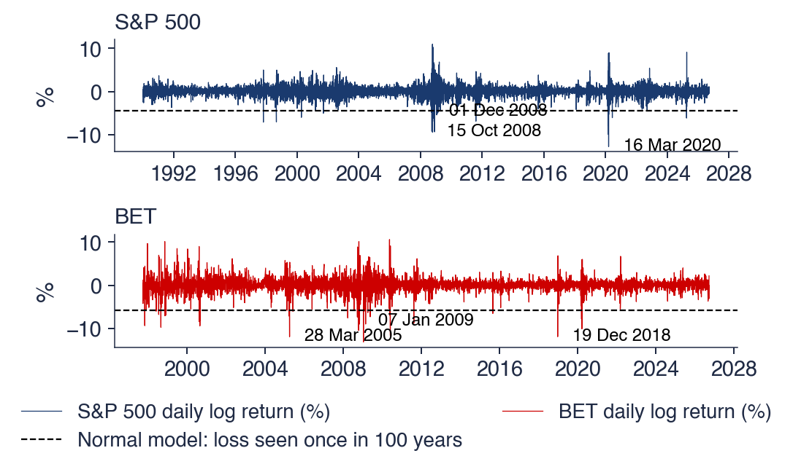

Bucharest University of Economic Studies IDA Institute Digital Assets Blockchain Research Center AI4EFin Artificial Intelligence for Energy Finance Romanian Academy, Institute for Economic Forecasting MSCA Digital Finance
Risk management is about the left tail of the return distribution: the size of the worst days and how often they come. The Normal distribution, which fits the centre of daily returns reasonably well, fails precisely there. Fitted to the daily S&P 500 returns of 1990–2026, it puts a loss of 4.4% at once in 100 years; the index had 35 such days in that period. The largest daily loss of the sample, −12.8% on 16 March 2020, lies 11.3 standard deviations below the mean, and the Normal law expects a day at least that bad once in about \(10^{27}\) years.
Extreme value theory (EVT) replaces the Normal tail by a model built only for the tail. Two limit theorems carry the method: the Fisher–Tippett–Gnedenko theorem for the maxima of blocks of observations, and the Pickands–Balkema–de Haan theorem for the excesses over a high threshold. Both lead to one shape parameter, which for financial losses is the inverse of the tail index \(\alpha\). On the four series of the chapter, the S&P 500, the DAX, the BET and Bitcoin, the tail index of daily losses lies between about 2.5 and 3: the variance is finite, the kurtosis is not.
With the tail model, the extreme days become rare but plausible events. The COVID-19 loss of the S&P 500 becomes an event of once in about 89 years instead of \(10^{27}\), and the EVT VaR 1% exceeds the Normal one by 27% for the S&P 500 and by 31% for the BET. The chapter shows where EVT agrees with historical simulation, at the 1% and 2.5% levels, where it adds information, far in the tail, and how much uncertainty remains when the model extrapolates beyond the data.

Daily log returns (%) of the S&P 500 since 1990 and of the BET since 1997; the dashed line marks the daily loss that a Normal distribution fitted to each series exceeds once in 100 years (S&P 500: −4.4%; BET: −5.8%), and the labels mark the largest losses.
What you will be able to do
Tell a heavy tail from a light tail and read a tail on log-log axes.
Estimate the tail index with the Hill estimator, with a standard error and a Hill plot.
State the Fisher–Tippett–Gnedenko and the Pickands–Balkema–de Haan theorems in words and in formulas.
Fit a GEV distribution to block maxima and a GPD to the losses above a threshold, and check the fit with PP and QQ plots.
Compute return levels, VaR and ES from an EVT fit, step by step.
Judge, on real data, when EVT improves on historical simulation and on the Normal distribution.
Chapter plan
Why Tails MatterThree crashes, the waiting times implied by the Normal distribution, the origins of EVT and the definitions of VaR and ES.
SummaryKey results, formulas and questions for self-assessment.
Why Tails Matter
The section starts from three market crashes, 1987, 2008 and 2020, and measures each of them with the Normal distribution fitted to the data. The waiting times that the Normal law assigns to these days are longer than the age of the universe, while the data show dozens of them in a few decades. The section then introduces extreme value theory and the two risk measures, VaR and ES, which depend only on the tail.
On 19 October 1987 the S&P 500 fell by about 20% in a single session (Carlson, 2007). As a log return the fall is \(\ln(1 - 0.20) = -22.3\%\). The chapter's daily data start in 1990, so this day lies outside the sample; the largest daily loss within the sample is −12.8%, on 16 March 2020. Black Monday is therefore an out-of-sample test for any model of the tail.
Fitted to the daily returns of 1990–2026, the Normal distribution has a daily standard deviation \(\hat\sigma = 1.13\%\). The Black Monday return is then \(z = (r - \hat\mu)/\hat\sigma = -19.7\) standard deviations from the mean, and \(P(Z \le -19.7) \approx 10^{-86}\) for \(Z \sim N(0, 1)\). A probability of this order means, in practice, an impossible event. Yet the day happened; the chart shows the index at five-minute frequency from 14 to 21 October 1987.
The conclusion is not that 1987 was a statistical miracle, but that the Normal distribution is the wrong instrument for such days. Its tail decays like \(e^{-z^2/2}\), so every additional standard deviation multiplies the improbability of a loss by a growing factor. A model that answers questions about extreme days must describe the tail itself.
In brief
On 19 October 1987 the S&P 500 fell about 20% in one day Carlson (2007)
as a log return: \(\ln(1 - 0.20) = -22.3\%\)
larger than any daily loss in our data since 1990 (the worst: \(-12.8\%\) on 16 March 2020)
Measure it with the Normal distribution fitted to the S&P 500, 1990–2026
daily standard deviation \(\hat\sigma = 1.13\%\); \(z = (r - \hat\mu)/\hat\sigma = -19.7\) standard deviations
\(P(Z \le -19.7) \approx 10^{-86}\), with \(Z \sim N(0, 1)\): impossible, yet it happened
The Normal distribution says nothing useful about such days: we need a model of the tail
Lehman Brothers filed for bankruptcy on 15 September 2008, and the global financial crisis followed. In the chapter's data the S&P 500 lost 9.5% on 15 October 2008 and 9.4% on 1 December 2008, and the BET lost 13.1% on 7 January 2009, its worst day since 1997.
These losses did not come alone. They were grouped in a few months, together with many other large daily moves of both signs. This is volatility clustering, the stylised fact of Chapter 2: calm periods alternate with turbulent ones, and the extremes concentrate in the turbulent ones. For the statistics of extremes this matters twice. The largest losses of a sample are not independent draws, and a model with constant volatility cannot say when they are more likely.
A VaR model built on the Normal distribution assigns these days a probability close to zero. The point of the next frames is to quantify how close to zero, and to compare that probability with the number of such days actually observed.
In brief
Lehman Brothers filed for bankruptcy on 15 September 2008; the global financial crisis followed
S&P 500: \(-9.5\%\) on 15 October 2008 and \(-9.4\%\) on 1 December 2008
BET: \(-13.1\%\) on 7 January 2009
Large losses came in clusters, not one at a time
volatility clustering (Chapter 2) concentrates the extremes in a few months
A VaR model based on the Normal distribution puts almost zero probability on such days
In one week of March 2020 three of the chapter's four series recorded the largest daily loss of the whole sample: the S&P 500 lost 12.8% on 16 March 2020, the DAX 13.1% on 12 March 2020 and Bitcoin 46.5% on 12 March 2020. The shock was common to markets with very different structures, from a broad US index to a cryptocurrency traded every day of the week.
The chapter uses daily closing prices of four series: the S&P 500 and the DAX since 1990, the BET, the main index of the Bucharest Stock Exchange (BVB, Bursa de Valori București), since 1997, and Bitcoin since 2014. Returns are daily log returns, and losses are their negatives. The four series give a range of markets: a large developed market, a European one, an emerging market and a highly volatile digital asset.
The sample lengths differ, and this matters for the statistics of extremes. A longer sample contains more extreme days, so the tail can be estimated with less uncertainty; for Bitcoin, with about twelve years of data, every tail estimate rests on fewer observations.
In brief
In one week of March 2020 three of our series had their largest daily loss
S&P 500: \(-12.8\%\) on 16 March 2020
DAX: \(-13.1\%\) on 12 March 2020
Bitcoin: \(-46.5\%\) on 12 March 2020
The data of this chapter
daily closes from EODHD; S&P 500 and DAX since 1990, BET since 1997, Bitcoin since 2014
Question for the room At the 4σ threshold, the S&P 500 has 35 days below −4σ, against 0.29 expected under the Normal distribution. The ▶ button raises the threshold up to 6σ. How many S&P 500 days are below −6σ?
Answer
11 days. The Normal distribution expects 9,240 × Φ(−6) = 9.1 × 10−6 days, i.e. one such day in 4 million years. The 35 days below −4σ do not thin out as the Normal shape would have them (35 × Φ(−6)/Φ(−4) = 0.001): a third of them lie beyond 6σ. DAX has 5 days below −6σ, BET 13, Bitcoin 2.
Question for the room Below the level of the loss exceeded once in 100 years under the Normal distribution, the S&P 500 has 35 days since 1990. The ▶ button moves the period T from 1 year to 10,000 years. How many S&P 500 days are below the level of a "once in 10,000 years" loss?
Answer
17 days, below −5.56%. The Normal distribution expects 0.0037 such days in 9,240 (probability 1/(10,000 × 252) per day). The level only moves from −4.44% to −5.56%: the tail of the Normal distribution falls so fast that a period 100 times longer moves the threshold by little more than one percentage point. BET has 22 days below its 10,000-year level (−7.25%). At T = 1 year, the S&P 500 has 120 days below −2.98%, against 36.7 expected.
The chart shows the daily log returns of the S&P 500 since 1990 (top) and of the BET since 1997 (bottom). The dashed line is the daily loss that the Normal distribution fitted to each series exceeds once in 100 years: −4.4% for the S&P 500 and −5.8% for the BET. If the Normal law were right, a century of trading would produce about one day below the line.
The observed counts are 35 such days for the S&P 500 since 1990 and 34 for the BET since 1997. The labels mark the worst days: 15 October and 1 December 2008 and 16 March 2020 for the S&P 500; 28 March 2005, 7 January 2009 and 19 December 2018 for the BET. The days below the line are not spread evenly over time: they cluster around 2008 and 2020 for the S&P 500, and in the late 1990s and around 2008 for the BET.
The chart also shows the two stylised facts that EVT has to handle. The tail is heavy: the losses beyond the Normal once-a-century level are far too many. And the extremes come in bursts, so the tail estimates of the chapter, which treat the days as a single sample, describe the unconditional tail averaged over calm and turbulent periods.
In brief
Dashed line: the daily loss that a Normal law fitted to each series exceeds once in 100 years (S&P 500: \(-4.4\%\); BET: \(-5.8\%\))
Observed: 35 such days for the S&P 500 since 1990 and 34 for the BET since 1997
The table puts a number on each series' worst day. The standardised value \(z = (r - \hat\mu)/\hat\sigma\) uses the mean and standard deviation of the whole sample. The Normal probability of a day at least as bad is \(p = \Phi(z)\), with \(\Phi\) the cumulative distribution function (CDF) of \(N(0, 1)\), and the expected waiting time for such a day is \(1/(p \times 252)\) years, with 252 trading days per year (365 for Bitcoin, which trades every day).
The worst S&P 500 day, 16 March 2020, lies at \(z = -11.3\); the Normal law expects it once in about \(10^{27}\) years. For the DAX (\(z = -9.5\)) the waiting time is \(10^{19}\) years, for the BET (\(z = -8.9\), 7 January 2009) \(10^{16}\) years, and for Bitcoin (\(z = -13.4\))\(10^{38}\) years. These waiting times are absurd: the age of the universe is of the order of \(10^{10}\) years.
The last two columns count the days with a loss beyond four standard deviations. The Normal law expects 0.29 such days in the S&P 500 and DAX samples, 0.23 in the BET sample and 0.14 in the Bitcoin sample, fewer than one day in each case. The data show 35 days for the S&P 500, 27 for the DAX, 33 for the BET and 18 for Bitcoin. The failure is not limited to one exceptional day: the whole region beyond \(4\sigma\) is populated about a hundred times more densely than the Normal law allows.
In brief
worst day
loss (%)
\(z\)
Normal: once in (years)
days below \(-4\sigma\)
expected
S&P 500
16 March 2020
\({-12.8}\)
\({-11.3}\)
\(10^{27}\)
35
\(0.29\)
DAX
12 March 2020
\({-13.1}\)
\({-9.5}\)
\(10^{19}\)
27
\(0.29\)
BET
7 January 2009
\({-13.1}\)
\({-8.9}\)
\(10^{16}\)
33
\(0.23\)
Bitcoin
12 March 2020
\({-46.5}\)
\({-13.4}\)
\(10^{38}\)
18
\(0.14\)
\(z = (r - \hat\mu)/\hat\sigma\) with the mean and the standard deviation of the whole sample
\(p = \Phi(z)\): the Normal probability of a day at least as bad, with \(\Phi\) the \(N(0, 1)\) CDF
once in \(1/(p \times 252)\) years (365 days a year for Bitcoin)
The Normal waiting times are absurd: far longer than the history of any market
Losses beyond \(4\sigma\): the Normal law expects fewer than one day per series; we see between 18 and 35
Extreme value theory (EVT) is the statistics of the largest values of a sample. It developed in hydrology, meteorology and engineering, where the questions concern floods, storms and the strength of materials. Gumbel (1958) gives the classical example: the height of a dam is set by the distribution of the yearly maximum level of the river, not by its average level.
Finance asks the same kind of question. How large is the daily loss exceeded once in ten years? How much capital covers the worst 1% of days? Both questions concern rare events, of which a sample contains only a few, so the answer cannot rest only on counting past occurrences.
EVT's answer is to model only the tail of the distribution and to let the tail observations determine its shape, without assuming anything about the centre. The theory provides the functional form of the tail, with a small number of parameters, so that it can be extrapolated beyond the largest observed value. The first financial applications estimated the frequency of large stock returns (Jansen & de Vries, 1991) and the distribution of extreme market returns (Longin, 1996).
In brief
EVT (extreme value theory): the statistics of the largest values of a sample
first used for floods, storms and the strength of materials
Gumbel (1958): the yearly maximum of a river decides the height of a dam
The Value at Risk (VaR) at level \(p\) is the loss exceeded with probability \(p\). With returns \(r\) and \(q_p(r)\) the \(p\)-quantile of their distribution, \(\mathrm{VaR}_p = -q_p(r)\); the convention of the course names the level by the tail probability, as in VaR 1%. The expected shortfall (ES) at level \(p\) is the average loss on the worst \(p\) share of days, \(\mathrm{ES}_p = -E[r \mid r \le q_p(r)]\). Under the Basel framework (MAR33), banks report ES 2.5% for market risk.
The two measures differ in what they see. VaR is a single quantile: it says where the tail begins but nothing about the size of the losses beyond it. ES averages over the whole tail beyond VaR, and it is a coherent risk measure (Acerbi & Tasche, 2002); in particular it is subadditive, so it rewards diversification. Both are defined entirely by the tail of the distribution, and a model that misrepresents the tail misrepresents the risk, however well it fits the centre.
The question for the room shows why historical data alone are not enough far in the tail. With 250 trading days a year, a sample containing about 10 days below VaR 0.1% needs \(10/(0.001 \times 250) = 40\) years of data. Few markets have such histories, and fewer still are stable over that horizon. EVT extrapolates the tail with a model, so that the far quantiles rest on all the tail observations rather than on the handful of days beyond them.
In brief
VaR (Value at Risk) at level \(p\): the loss exceeded with probability \(p\)
\(\mathrm{VaR}_p = -q_p(r)\), with \(q_p\) the \(p\)-quantile of the return; for example VaR 1%
ES (expected shortfall) at level \(p\): the average loss on the worst \(p\) share of days
\(\mathrm{ES}_p = -E[r \mid r \le q_p(r)]\); banks report ES 2.5% under the Basel Committee (MAR33)
Both live in the tail: a model that misses the tail misses the risk
Question for the room: with 250 trading days a year, how many years of data contain about 10 days below VaR 0.1%?
Answer
\(10 / (0.001 \times 250) = 40\) years: historical data alone are too thin; EVT extrapolates the tail with a model
Section summary
The worst days of the four markets lie between 9 and 13 standard deviations below the mean, and the region beyond four standard deviations contains between 18 and 35 days per series instead of fewer than one. The Normal distribution is not a usable model for the tail. VaR and ES depend only on the tail, and far in the tail the historical data are too few. The next section defines what a heavy tail is and introduces the parameter that measures it, the tail index.
Heavy Tails and Regular Variation
The section makes the notion of a heavy tail precise. It works with losses instead of returns, compares tails that decay exponentially with tails that decay like a power, and defines regular variation and the tail index \(\alpha\). The tail index decides which moments of the losses exist, and it can be read off a log-log plot of the empirical tail.
The chapter works with losses \(L = -r\), in percent, so that a large positive \(L\) is a large loss and the right tail of \(L\) is the left tail of returns. The tail of \(L\) is described by the survival function
\[\bar F(x) = P(L > x) = 1 - F(x),\]
the probability of a loss above \(x\). All tail questions, VaR, ES and waiting times, are questions about \(\bar F(x)\) for large \(x\).
A tail is light when \(\bar F(x)\) falls at least as fast as an exponential, \(e^{-cx}\) for some \(c > 0\). The Normal distribution, with \(\bar F(x)\) of order \(e^{-x^2/2}\), and the Exponential distribution, with \(\bar F(x) = e^{-x}\), are examples; for light-tailed laws all moments are finite. A tail is heavy, of power-law type, when \(\bar F(x)\) falls like a power \(x^{-\alpha}\). The Pareto and Student-t distributions and the \(\alpha\)-stable laws of Chapter 3 have such tails.
The exponent \(\alpha > 0\) is the tail index. The smaller \(\alpha\), the slower \(\bar F\) decays and the heavier the tail. The difference from a light tail is not one of degree: a power decays more slowly than any exponential, so far enough in the tail a heavy-tailed law always assigns more probability than any light-tailed one.
In brief
Work with losses \(L = -r\) (in %): a large positive \(L\) is a large loss
the tail of \(L\) is described by the survival function \(\bar F(x) = P(L > x)\)
Light tail: \(\bar F(x)\) falls at least as fast as an exponential, \(e^{-cx}\) with some \(c > 0\)
examples: Normal (\(\bar F(x) \approx e^{-x^2/2}\)), Exponential (\(e^{-x}\)); all moments are finite
Heavy (power-law) tail: \(\bar F(x)\) falls like a power, \(x^{-\alpha}\)
examples: Pareto, Student-t, the \(\alpha\)-stable laws of Chapter 3
\(\alpha > 0\) is the tail index: the smaller \(\alpha\), the heavier the tail
Question for the room At x = 10, P(X > 20)/P(X > 10) = 0.128 for the Student-t distribution with 3 degrees of freedom. What does the ratio P(X > 2x)/P(X > x) of the Student-t become at x = 50?
Answer
0.125 = 2−3: for a regularly varying tail, P(X > tx)/P(X > x) → t−α, with α = 3 for the Student-t with 3 degrees of freedom. At x = 2 the ratio is still 0.201, at x = 20 it is 0.126. For the exponential distribution the ratio is e−x, 1.9 × 10−22 at x = 50, and for the Normal distribution about 10−1629: light tails vanish at every doubling of the threshold, the power-law tail always loses the same factor 8.
The chart compares the survival functions of a Normal, an Exponential and a Student-t distribution with 3 degrees of freedom, on linear and on log-log axes. On log-log axes, \(\ln \bar F\) against \(\ln x\), a power law \(\bar F(x) = C x^{-\alpha}\) is a straight line with slope \(-\alpha\). Light tails bend downwards and drop off the bottom of the chart: their logarithm falls faster than any linear function of \(\ln x\).
The probabilities of exceeding 10 show the scale of the differences. For the Normal distribution \(P(X > 10) = 7.6 \times 10^{-24}\), for the Exponential \(4.5 \times 10^{-5}\) and for the Student-t with 3 degrees of freedom \(1.1 \times 10^{-3}\). The Student-t probability is about \(10^{20}\) times the Normal one. Near the centre the three laws can look similar; ten units out they differ by twenty orders of magnitude.
The log-log plot is therefore the natural first diagnostic. A straight right end indicates a power tail and its slope estimates \(-\alpha\); a right end that curves down indicates a light tail.
In brief
On log-log axes a power law is a straight line with slope \(-\alpha\); light tails bend down and vanish
\(P(X > 10)\): Normal \(7.6\times 10^{-24}\), Exponential \(4.5\times 10^{-5}\), Student-t with 3 degrees of freedom \(1.1\times 10^{-3}\)
The power law \(\bar F(x) = C x^{-\alpha}\) is too rigid for real data, which follow it only approximately. Regular variation is the general definition. The loss \(L\) has a regularly varying tail with index \(\alpha > 0\) if
\[\bar F(x) = x^{-\alpha}\,\ell(x),\]
(5.1)
where \(\ell\) is slowly varying: \(\ell(tx)/\ell(x) \to 1\) as \(x \to \infty\), for every \(t > 0\). A constant or \(\ln x\) are slowly varying. Far in the tail, \(\bar F\) behaves like the power \(x^{-\alpha}\), up to a factor that changes so slowly that it does not affect ratios of probabilities.
An equivalent statement is \(P(L > tx)/P(L > x) \to t^{-\alpha}\) for large \(x\). Doubling the loss divides its probability by \(2^\alpha\), whatever the level at which the doubling starts. This scale invariance is the practical content of a power tail: the probability of a 10% loss relative to a 5% loss is the same as that of a 6% loss relative to a 3% loss. For the Student-t with 3 degrees of freedom, \(P(X > 20)/P(X > 10) = 0.128\), close to the limit \(2^{-3} = 0.125\).
The tail index of common laws is known. A Pareto law with \(\bar F(x) = (x/x_0)^{-\alpha}\) has index \(\alpha\). A Student-t with \(\nu\) degrees of freedom has \(\alpha = \nu\). An \(\alpha\)-stable law with \(\alpha < 2\) (Chapter 3) has a tail index equal to its stability parameter. The Normal distribution has no power tail; formally, \(\alpha = \infty\).
In brief
\(L\) has a regularly varying tail with index \(\alpha > 0\) if \(\bar F(x) = x^{-\alpha}\ell(x)\)
in words: far in the tail, \(\bar F\) behaves like the power \(x^{-\alpha}\), up to a factor \(\ell(x)\) that changes very slowly
\(\ell\) is slowly varying: \(\ell(tx)/\ell(x) \to 1\) as \(x \to \infty\), for every \(t > 0\) (e.g. a constant, \(\ln x\))
Equivalent: \(\dfrac{P(L > tx)}{P(L > x)} \to t^{-\alpha}\) for large \(x\)
doubling the loss divides its probability by \(2^\alpha\), whatever the level
Student-t with 3 degrees of freedom: \(P(X > 20)/P(X > 10) = 0.128\), close to \(2^{-3} = 0.125\)
Tail indices of common laws
Pareto with \(\bar F(x) = (x/x_0)^{-\alpha}\): index \(\alpha\); Student-t with \(\nu\) degrees of freedom: \(\alpha = \nu\)
\(\alpha\)-stable with \(\alpha < 2\) (Chapter 3): the same \(\alpha\); Normal: no power tail (\(\alpha = \infty\))
For a regularly varying tail the moment of order \(m\),\(E|L|^m\), is finite if \(m < \alpha\) and infinite if \(m > \alpha\). The integral \(\int x^m \, dF(x)\) converges only if the density, of order \(x^{-\alpha-1}\), decays faster than \(x^m\) grows. Hence \(\alpha \le 1\) means no mean, \(\alpha \le 2\) no variance and \(\alpha \le 4\) no kurtosis.
For stock returns, Gopikrishnan et al. (1999) report a tail index near 3, the "inverse cubic law". With \(\alpha \approx 3\) the variance is finite, but the fourth moment is not. This explains a fact seen in Chapter 2: the sample kurtosis of daily returns does not settle as the sample grows, because each new extreme day can move it by a large amount. Statistics that rely on the fourth moment, such as kurtosis-based tests, behave poorly under such tails.
The link with Chapter 3 needs care. The stable parameter \(\alpha \approx 1.5\) is fitted to the whole distribution and implies infinite variance, as in the model of Mandelbrot (1963). The tail index of this chapter uses only the largest losses. A tail index near 3 is the evidence against infinite variance announced in Chapter 3: the centre of the distribution may look stable, but its far tail decays faster than a stable law with \(\alpha < 2\) allows.
In brief
For a regularly varying tail: \(E|L|^m < \infty\) if \(m < \alpha\) and \(E|L|^m = \infty\) if \(m > \alpha\)
\(E|L|^m\): the moment of order \(m\); it is finite only for orders below the tail index
\(\alpha \le 1\): no mean; \(\alpha \le 2\): no variance; \(\alpha \le 4\): no kurtosis
Question for the room On the slide, six illustrative losses give α̂ = 2.12. For the six largest real losses of the S&P 500 (k = 5, threshold X(6) = 7.92%), what is α̂?
Answer
4.15: the log ratios are 0.477, 0.232, 0.178, 0.166 and 0.152, with sum 1.205, so ξ̂ = 0.241 and α̂ = 1/0.241 = 4.15. Four of the five losses (9.99% … 9.22%) are close to each other, and the largest ratio comes from 16 March 2020 alone. SE = 4.15/√5 = 1.86: the i.i.d. 95% interval, [0.51, 7.78], also contains the estimate at k = 2.5% of n (2.97). With five losses, α̂ is not precise.
Question for the room Through the largest 2.5% of the losses, the slope of the S&P 500 is −3.00. The ▶ button raises the share to 10%. What slope does the line through the largest 10% of the losses give?
Answer
−2.50: the line reaches into the body of the distribution, where the points bend and flatten the line. At 10%, the Hill estimator also falls, to 2.04. DAX: from −3.57 to −2.65; BET: −2.17; Bitcoin: −2.31. At 0.5% (46 losses for the S&P 500), the slope of the DAX is −4.39: few points, high variability. The power law describes only the tail, and the estimate depends on how many losses enter it.
The chart applies the log-log diagnostic to the four series. The dots are the empirical survival function, the share of days with a loss above \(x\), plotted against \(x\) on logarithmic axes. The black line is a least-squares line through the 2.5% largest losses, and the red dashed curve is the survival function of the fitted Normal distribution.
In all four panels the right end of the dots is close to a straight line. The slopes are −3.00 for the S&P 500, −3.57 for the DAX, −2.79 for the BET and −3.00 for Bitcoin, so the implied tail indices lie between about 2.8 and 3.6, consistent with the inverse cubic law. The Normal curve bends away from the dots well before the largest losses; beyond a few percent it predicts probabilities that are orders of magnitude too small.
The horizontal axis differs across panels: Bitcoin losses extend to above 40%, while the index losses stay below about 13%. The slopes, however, are similar. Markets with very different volatility share a similar tail shape, which is the reason why the tail index, not the volatility, is the object of the chapter.
In brief
Dots: the share of days with a loss above \(x\); black: least-squares line through the 2.5% largest losses; red: Normal
Slopes: S&P 500 \(-3.00\), DAX \(-3.57\), BET \(-2.79\), Bitcoin \(-3.00\): straight lines, power tails
If \(\bar F(x) \approx C x^{-\alpha}\), then \(\ln \bar F(x) \approx \ln C - \alpha \ln x\), a line with slope \(-\alpha\). The least-squares estimator uses this directly. Let \(L_{(1)} \ge L_{(2)} \ge \dots \ge L_{(n)}\) be the losses sorted in decreasing order; \(L_{(i)}\), the \(i\)-th largest loss, is an order statistic. The empirical survival probability at \(L_{(i)}\) is about \(i/n\), and the estimator regresses \(\ln(i/n)\) on \(\ln L_{(i)}\) for the \(k\) largest losses.
The plot also shows where the power law stops. The body of the distribution, the small losses, bends away from the line: there the survival function is close to 1 and decays slowly. The power law describes only the tail, and the choice of how many order statistics to use, \(k\), is the central practical problem of tail estimation. For the indices, the Normal tail drops below the data already for losses of 3–4%.
The least-squares slope is simple and visual, but it has statistical defects. The points of the empirical survival function are cumulative, so neighbouring points share most of their information and the regression errors are strongly dependent; the usual regression standard errors are invalid. The Hill estimator of the next section uses the same order statistics with a likelihood justification and is the standard tool.
In brief
If \(\bar F(x) \approx C x^{-\alpha}\), then \(\ln \bar F(x) \approx \ln C - \alpha \ln x\): a line with slope \(-\alpha\)
least-squares estimator: regress \(\ln(i/n)\) on \(\ln L_{(i)}\) for the \(k\) largest losses \(L_{(1)} \ge \dots \ge L_{(k)}\)
\(L_{(i)}\) is the \(i\)-th largest loss, an order statistic
The body of the distribution (small losses) bends away from the line: the power law holds only in the tail
The Normal tail drops below the data already at 3–4% for the indices
The least-squares slope is simple but its points are not independent; the Hill estimator is the standard tool
Assume daily losses have a Pareto tail with \(\alpha = 3\) and a 1% probability of a loss above 3%. Then \(P(L > x) = 1\% \times (x/3)^{-3}\) for \(x \ge 3\%\). The probability of a loss above 6% is \(1\% \times 2^{-3} = 0.125\%\), and of a loss above 9% is \(1\% \times 3^{-3} = 0.037\%\). Doubling the loss divides the probability by \(2^3 = 8\), at any level of the tail.
The question asks for the loss exceeded with probability 0.1%, the VaR 0.1%. Solving \(1\% \times (x/3)^{-3} = 0.1\%\) gives \((x/3)^3 = 10\) and \(x = 3 \times 10^{1/3} = 3 \times 2.15 = 6.46\%\). A tail probability ten times smaller moves the loss only by the factor \(10^{1/\alpha} = 2.15\).
The example contains the logic of every tail extrapolation in the chapter. A quantile far in the tail is obtained from a quantile at a moderate level, where data are plentiful, multiplied by a factor that depends only on the ratio of the probabilities and on \(\alpha\). The precision of the extrapolation depends on the precision of \(\alpha\), which is why the estimation of the tail index occupies the next section.
In brief
Daily losses have a Pareto tail with \(\alpha = 3\) and \(P(L > 3\%) = 1\%\)
a probability ten times smaller only moves the loss by a factor \(10^{1/\alpha}\)
Section summary
A heavy tail decays like a power, \(\bar F(x) = x^{-\alpha}\ell(x)\), and the tail index \(\alpha\) decides which moments exist. On log-log axes the empirical tails of the four series are close to straight lines with slopes between −2.8 and −3.6, while the Normal tail falls away. A tail index near 3 means finite variance and infinite kurtosis. The next section estimates \(\alpha\) with the Hill estimator and gives it a standard error.
The Hill Estimator
The Hill estimator is the maximum likelihood estimator of the tail index when the losses above a threshold follow a Pareto law. The section derives it, applies it to a small example, discusses the choice of the number \(k\) of tail observations, gives its standard error under independence and under dependence, and estimates the tail index of four markets and four stocks of the Bucharest Stock Exchange.
the inverse of the average log ratio between the \(k\) largest losses and the threshold \(u = L_{(k+1)}\), the \((k+1)\)-th largest loss. The estimator uses only the \(k + 1\) largest observations and makes no assumption about the rest of the distribution.
The justification is a property of the Pareto law. If the losses above \(u\) are Pareto, \(P(L > x \mid L > u) = (x/u)^{-\alpha}\) for \(x \ge u\), then the log excess \(\ln(L/u)\), given \(L > u\), satisfies \(P(\ln(L/u) > y \mid L > u) = e^{-\alpha y}\): it is Exponential with mean \(1/\alpha\). The average of the \(k\) log excesses estimates \(1/\alpha\), and its inverse estimates \(\alpha\). Since the sample mean is the maximum likelihood estimator of an Exponential mean, Hill is the maximum likelihood estimator of the tail index of a Pareto tail above \(u\).
For losses that are only regularly varying, (5.1), the Pareto form holds approximately above a high threshold, and the Hill estimator is consistent when \(k\) grows more slowly than \(n\). The estimator and the least-squares estimator of the previous section are both treated in Franke, Härdle & Hafner (2019), Ch. 18.
In brief
Sort the losses: \(L_{(1)} \ge L_{(2)} \ge \dots \ge L_{(n)}\); keep the \(k\) largest
Hill estimatorHill (1975): \(\hat\alpha_k = \Big[\dfrac{1}{k}\sum_{i=1}^{k}\ln\dfrac{L_{(i)}}{L_{(k+1)}}\Big]^{-1}\)
in words: the inverse of the average log ratio between the \(k\) largest losses and the threshold
the threshold is the \((k+1)\)-th largest loss, \(u = L_{(k+1)}\)
Why it works: if \(P(L > x \mid L > u) = (x/u)^{-\alpha}\) (Pareto above \(u\)), then \(\ln(L/u)\) given \(L > u\) is Exponential with mean \(1/\alpha\)
the mean of the \(k\) log excesses estimates \(1/\alpha\); its inverse estimates \(\alpha\)
Hill \(=\) the maximum likelihood estimator of a Pareto tail above \(u\)
Ported from the SFE Quantlet SFElshill (least-squares and Hill estimators of the tail index) Franke, Härdle & Hafner (2019)
Take the six largest daily losses of a series, 9.5%, 7.2%, 6.1%, 5.4%, 4.8% and 4.0%, and set \(k = 5\), so that the threshold is \(L_{(6)} = 4.0\%\). The log excesses \(\ln(L_{(i)}/4.0)\) of the five largest losses are 0.865, 0.588, 0.422, 0.300 and 0.182, with mean 0.471.
The Hill estimate is \(\hat\alpha_5 = 1/0.471 = 2.12\). Under independence its standard error is approximately \(\mathrm{SE}(\hat\alpha) \approx \hat\alpha/\sqrt{k} = 2.12/\sqrt{5} = 0.95\), so an approximate 95% interval would run from about 0.3 to about 4.
With five tail observations the estimate is uninformative: it cannot distinguish a tail without a variance from one with a finite kurtosis. Real applications use hundreds of tail losses, and with \(k\) of a few hundred the relative standard error \(1/\sqrt{k}\) falls to a few percent. The price of a larger \(k\) is that the observations come from further into the body of the distribution, which is the subject of the next frame.
In brief
The six largest daily losses (%): \(9.5, 7.2, 6.1, 5.4, 4.8, 4.0\); take \(k = 5\), so \(L_{(6)} = 4.0\)
Log excesses \(\ln(L_{(i)}/4.0)\)
\(0.865\), \(0.588\), \(0.422\), \(0.300\), \(0.182\); mean \(0.471\)
\(\hat\alpha_5 = 1/0.471 = 2.12\)
Standard error under independence: \(\mathrm{SE}(\hat\alpha) \approx \hat\alpha/\sqrt{k} = 0.95\)
with \(k = 5\) the estimate is very imprecise: real applications use hundreds of losses
The choice of \(k\) is a bias–variance trade-off. With a small \(k\) the estimator uses only the far tail, where the Pareto approximation is good, but few points: the variance is high. With a large \(k\) the body of the distribution enters, where the power law fails: the estimate is biased, usually downwards for financial losses, because the moderate losses decay more slowly than the power law would require.
The Hill plot displays \(\hat\alpha_k\) against \(k\) and lets the analyst look for a region where it is roughly flat (Drees, Resnick & de Haan, 2000). In the chapter \(k\) is shown as a share of the sample, \(k/n\) between 0.5% and 10%, so that series of different lengths can be compared on one axis.
The rule is fixed before the results are seen: \(k = 2.5\%\) of \(n\), with the estimates at \(k = 1\%\) and \(5\%\) of \(n\) reported as a robustness check. Fixing the rule in advance prevents the choice of \(k\) from being tuned to a desired value of \(\alpha\), a form of data snooping to which the Hill plot, with its many possible readings, is prone.
In brief
Small \(k\): only the far tail, few points: high variance
Large \(k\): the body of the distribution enters, where the power law fails: bias
Question for the room The last column is the Hill index of the gains, with the same k. For the S&P 500, the losses have α̂ = 2.97 at k = 2.5% of n. What is α̂ of the gains?
Answer
2.96: for the S&P 500 the gains have a tail as heavy as the losses. The largest gains are the rebounds of the same crises: 10.96% (13 October 2008), 10.25% (28 October 2008), 9.09% (9 April 2025), 8.97% (24 March 2020). DAX (3.22), BET (2.82) and Bitcoin (3.37) have gains with lighter tails than their losses. Also at k = 2.5% of n, the block SE of the S&P 500 is 0.30, 1.5 times the i.i.d. SE (0.20), because large losses come in clusters; for the DAX the two coincide (0.20).
Question for the room At k = 2.5% of n, none of the four BVB stocks has α̂ below 2.4 (the smallest is TLV, 2.49). The ▶ button moves k/n from 1% to 10%. How many of them have α̂ below 2.4 at k = 10% of n?
Answer
All four: SNP 2.27, BRD 2.35, TLV 2.08, TGN 1.87. With 10% of n the body of the distribution enters the estimate and biases it downwards, as for the indices (S&P 500 2.04). The intervals narrow (i.i.d. SE between 0.10 and 0.12), but they are intervals around a biased quantity. At 1% of n, BRD has 3.86, with the interval [2.62, 5.11]: few losses, high variability.
Question for the room At k = 2.5% of n, α̂ of the S&P 500 is 2.97, with the 95% interval [2.59, 3.35]. The ▶ button moves k/n from 0.5% to 10%. What is α̂ of the S&P 500 at k = 10% of n?
Answer
2.04, with the i.i.d. interval [1.91, 2.18], which no longer contains 2.97. With a large k the body of the distribution enters and biases the estimate downwards; the interval narrows (SE = α̂/√k), so a large k gives a precise estimate of a biased quantity. BET falls to 1.82, below 2, although it is 2.57 in the flat zone. The i.i.d. interval also understates the uncertainty: at k = 2.5%, the i.i.d. SE of the S&P 500 is 0.20 and the moving-block bootstrap SE (blocks of 20 days) 0.30, 1.5 times larger, because large losses come in clusters; for the DAX the two coincide (0.20).
The chart shows the Hill plots of the four series. The horizontal axis is the share of the largest losses used, \(k/n\), from 0.5% to 10%; the vertical axis is the Hill estimate of \(\alpha\). The shaded band is the 95% interval for the S&P 500, the dotted vertical line marks the rule \(k = 2.5\%\) of \(n\), and the horizontal lines at \(\alpha = 2\) and \(\alpha = 4\) separate the regions where the variance and the kurtosis are finite.
Between 1% and 5% of \(n\) the curves are fairly flat, mostly between 2 and 3.5. At the smallest shares the estimates fluctuate strongly, as the DAX curve shows, which starts above 5 at \(k/n = 0.5\%\): a handful of observations cannot pin the index down. Beyond 5% of \(n\) all curves drift downwards and approach or cross \(\alpha = 2\): the body of the distribution biases \(\hat\alpha\).
The reading of the plot is therefore that the tail index of daily losses lies between 2 and 4 in every series, with the four curves close to each other in the flat region. The downward drift at large \(k\) is a warning: an estimate taken from the 10% largest losses would suggest an infinite variance that the far tail does not support.
In brief
Between 1% and 5% of \(n\) the curves are fairly flat, mostly between 2 and 3.5; band: 95% interval for the S&P 500
Beyond 5% the estimates drift down: the body of the distribution biases \(\hat\alpha\)
The condition \(k/n \to 0\) says that the number of tail observations grows, but as a vanishing share of the sample, so that they remain in the tail. The result gives the standard error \(\mathrm{SE} = \hat\alpha/\sqrt{k}\) and the 95% confidence interval (CI) \(\hat\alpha(1 \pm 1.96/\sqrt{k})\).
Returns are not independent: large losses come in clusters. Under dependence the asymptotic variance in (5.3) is no longer \(\alpha^2\), and the i.i.d. standard error can understate the uncertainty. The moving-block bootstrap addresses this. It resamples blocks of 20 consecutive days, rebuilds a series of the original length, recomputes \(\hat\alpha\) and takes the standard deviation of the estimates over the bootstrap samples. Because each block keeps its cluster of large losses together, the resulting standard error reflects the dependence within a month of trading.
In the chapter each series receives 500 bootstrap samples, with \(k\) fixed at 2.5% of \(n\), the rule of the Hill plot. The block length of 20 days is about one trading month, long enough to contain a typical volatility cluster.
In brief
For i.i.d. data with a Pareto-type tail: \(\sqrt{k}\,(\hat\alpha_k - \alpha) \to N(0, \alpha^2)\), for \(k \to \infty\), \(k/n \to 0\)
i.i.d.: independent and identically distributed; for large \(k\), \(\hat\alpha_k\) is approximately Normal around \(\alpha\)
\(k/n \to 0\): the number of tail losses grows, but is a vanishing share of the sample
\(\mathrm{SE} = \hat\alpha/\sqrt{k}\); 95% CI (confidence interval): \(\hat\alpha(1 \pm 1.96/\sqrt{k})\)
Returns are not independent: large losses come in clusters (volatility clustering)
moving-block bootstrap: resample blocks of 20 consecutive days, recompute \(\hat\alpha\), take the standard deviation
the blocks keep the clusters together, so the standard error is honest about the dependence
Every series: 500 bootstrap samples, with the \(k\) fixed on the Hill-plot slide
The table reports, for each series, the sample size \(n\), the number \(k\) of tail losses, the Hill estimate \(\hat\alpha\) with its 95% interval, the i.i.d. and block-bootstrap standard errors, the estimates at \(k = 1\%\) and \(5\%\) of \(n\), and the Hill index of the gains. For the S&P 500, \(n = 9{,}240\) days and \(k = 231\) give \(\hat\alpha = 2.97\), with interval \([2.59, 3.35]\). The DAX has \(\hat\alpha = 3.00\), the BET 2.57 and Bitcoin 2.71.
All four estimates lie between 2.57 and 3.00, and all four intervals exclude 2 and lie below 4: the variance of daily losses is finite and the kurtosis is not. The block-bootstrap standard error is of the same order as the i.i.d. one: for the S&P 500 it is half as large again (0.30 against 0.20), while for the DAX (0.20 against 0.20), the BET (0.23 against 0.19) and Bitcoin (0.23 against 0.26) the two differ by at most 0.04. The sensitivity to \(k\) is larger than the sampling error: the DAX estimate is 3.84 at \(k = 1\%\) and 2.67 at \(k = 5\%\), a difference of more than five standard errors.
The last column applies the estimator to the gains, the days with \(r_t > 0\), with the same \(k\). The gain indices are 2.96 for the S&P 500, 3.22 for the DAX, 2.82 for the BET and 3.37 for Bitcoin. For the DAX, the BET and Bitcoin the gains have a lighter tail than the losses; for the S&P 500 the two indices are practically equal.
In brief
\(n\)
\(k\)
\(\hat\alpha\)
95% CI
SE i.i.d.
SE block
\(k = 1\%\) / \(5\%\)
gains
S&P 500
9 240
231
\(2.97\)
\([2.59, 3.35]\)
\(0.20\)
\(0.30\)
\(2.95\) / \(2.56\)
\(2.96\)
DAX
9 288
232
\(3.00\)
\([2.61, 3.38]\)
\(0.20\)
\(0.20\)
\(3.84\) / \(2.67\)
\(3.22\)
BET
7 243
181
\(2.57\)
\([2.20, 2.95]\)
\(0.19\)
\(0.23\)
\(2.70\) / \(2.16\)
\(2.82\)
Bitcoin
4 384
109
\(2.71\)
\([2.20, 3.21]\)
\(0.26\)
\(0.23\)
\(3.83\) / \(2.49\)
\(3.37\)
Losses: \(\hat\alpha\) between \(2.57\) and \(3.00\)
the intervals exclude 2 (finite variance) and lie below 4 (no finite kurtosis)
The block-bootstrap SE is close to the i.i.d. one for the DAX, BET and Bitcoin, but larger for the S&P 500 (\(0.30\) vs \(0.20\)); the estimates move with \(k\) by more than one SE
Last column: the Hill index of gains (\(r_t > 0\)), same \(k\)
where \(\hat x_p\) is the loss exceeded with probability \(p\) and \(k/n\) is the share of losses above the threshold \(L_{(k+1)}\). The formula starts at the threshold, which is exceeded with probability about \(k/n\), and extrapolates with the power law to the smaller probability \(p\), exactly as in the Pareto worked example.
For the S&P 500 and VaR 0.1%: \(n = 9{,}240\),\(k = 231\),\(L_{(k+1)} = 2.34\%\) and \(\hat\alpha = 2.97\). Then \(k/(np) = 231/9.24 = 25.0\) and \(25.0^{1/2.97} = 2.95\), so \(\hat x_{0.001} = 2.34 \times 2.95 = 6.92\%\). The empirical 0.1% quantile of the sample is 6.94%: inside the sample, the extrapolation and the data agree.
The extrapolation is only as good as \(\hat\alpha\). The exponent \(1/\hat\alpha\) multiplies \(\ln(k/(np))\), which is large when \(p\) is small, so an error of one standard error in \(\hat\alpha\) changes \(\hat x_p\) noticeably, and the change grows as \(p\) moves further into the tail.
In brief
Hill (Weissman) quantileWeissman (1978): \(\hat x_p = L_{(k+1)}\Big(\dfrac{k}{n p}\Big)^{1/\hat\alpha}\)
\(\hat x_p\): the loss exceeded with probability \(p\); \(k/n\): the share of losses above the threshold \(L_{(k+1)}\)
extrapolated from the threshold with the power law; SFE Quantlet SFEhillquantile
Worked example, S&P 500, VaR 0.1%: \(n = 9\,240\), \(k = 231\), \(L_{(k+1)} = 2.34\%\), \(\hat\alpha = 2.97\)
The same analysis is applied to four large stocks of the Bucharest Stock Exchange: OMV Petrom (SNP), BRD, Banca Transilvania (TLV) and Transgaz (TGN). The data are daily log returns of the adjusted closing price since 2010, with \(k = 2.5\%\) of \(n\). For TLV, the two days 30–31 May 2016 are removed: a price adjustment was recorded one day late, which would otherwise create two spurious extreme returns (Chapter 2).
The estimates are 2.96 for SNP, 3.22 for BRD, 2.49 for TLV and 3.02 for TGN, all between 2.49 and 3.22, as for the indices. With about 3,800 days per stock, the intervals are wider than for the indices: the TLV interval, \([1.98, 2.99]\), reaches just below 2, while the others lie above it. The block-bootstrap standard errors range from 0.28 (TLV) to 0.39 (SNP).
The last column shows the gain index. For all four stocks it is higher than the loss index, between 3.55 and 3.77: the losses of individual BVB stocks have heavier tails than their gains. The asymmetry is clearer than for the indices, and it means that a symmetric distribution fitted to both tails would understate the downside.
In brief
\(n\)
\(\hat\alpha\)
95% CI
SE block
gains
OMV Petrom (SNP)
3 815
\(2.96\)
\([2.36, 3.56]\)
\(0.39\)
\(3.71\)
BRD
3 771
\(3.22\)
\([2.57, 3.87]\)
\(0.33\)
\(3.77\)
Banca Transilvania (TLV)
3 788
\(2.49\)
\([1.98, 2.99]\)
\(0.28\)
\(3.55\)
Transgaz (TGN)
3 725
\(3.02\)
\([2.41, 3.64]\)
\(0.31\)
\(3.56\)
Daily log returns of the adjusted close since 2010, \(k = 2.5\%\) of \(n\)
TLV: the two days 30–31 May 2016 are removed, an adjustment applied one day late (Chapter 2)
All four: \(\hat\alpha\) between \(2.49\) and \(3.22\), as for the indices; the losses have heavier tails than the gains
Question for the room At k = 2.5% of n, TLV has α̂ = 2.49 and the 95% interval [1.98, 2.99], 1.01 wide. With n = 3,788, k = 1% of n means 37 losses. How wide is the TLV interval at k = 1% of n?
Answer
1.96, from 2.07 to 4.03, almost twice as wide. The width of the interval is 2 × 1.96 α̂/√k: k falls from 94 to 37 (√(94/37) = 1.59), and α̂ rises from 2.49 to 3.05. The BVB samples are 2.5 times shorter than those of the indices, so the same k/n gives fewer losses and wider bands; the S&P 500 has the interval [2.35, 3.56] at k = 1%. In the flat zone (1%–5%), none of the four stocks has α̂ below 2.
The chart shows the Hill plots of the four stocks on the same axes as the index plots. With samples of about 3,800 days, the curves wiggle more at small \(k\), where only a few dozen losses enter the estimate, and the 95% band, shown for TLV, is wider than the S&P 500 band.
In the flat region no stock has \(\hat\alpha\) below 2, so the variances are finite. The four stocks, from the energy sector (SNP, TGN) and the banking sector (BRD, TLV), have similar tail indices despite their different businesses. The heavy tail is a property of daily losses in general, not of one market or one sector.
In brief
Shorter samples (\(n \approx 3\,800\)): wider bands (TLV shown) and more wiggles at small \(k\)
No stock has \(\hat\alpha\) below 2 in the flat region: variances are finite
The Hill estimator turns the \(k\) largest losses into an estimate of the tail index, (5.2), with standard error \(\hat\alpha/\sqrt{k}\) under independence and a block-bootstrap standard error under dependence. With \(k = 2.5\%\) of \(n\), the four markets have \(\hat\alpha\) between 2.57 and 3.00 and the four BVB stocks between 2.49 and 3.22; all intervals lie below 4, and in the flat region of the Hill plot no estimate lies below 2. The estimates move with \(k\) by more than one standard error, and the Weissman formula (5.4) turns \(\hat\alpha\) into a tail quantile. The next section introduces a second diagnostic of the tail, the mean excess function.
The Mean Excess Function
The mean excess function measures the average size of a loss beyond a threshold, given that the threshold is crossed. Its shape distinguishes light tails from heavy ones, and its linearity above a threshold is one of the tools for choosing the threshold of the peaks-over-threshold method in Section 6.
the average loss beyond \(u\), given that \(u\) is exceeded. Its empirical version is the average of \(L_i - u\) over the losses with \(L_i > u\). In risk language, \(u + e(u)\) is the expected loss on a day when the loss exceeds \(u\), the quantity that ES computes at \(u = \mathrm{VaR}\).
Its shape identifies the type of tail. For the Exponential distribution \(e(u)\) is constant, a consequence of the memoryless property: having exceeded \(u\) says nothing about how much further the loss goes. For a Pareto law with \(\alpha > 1\),\(e(u) = u/(\alpha - 1)\), a rising straight line: the deeper the threshold, the larger the expected excess. For the Normal distribution \(e(u)\) falls towards 0, roughly like \(1/u\) for a standard Normal: beyond a high threshold the loss barely goes further.
For a Pareto tail with \(\alpha = 3\),\(e(u) = u/2\). Beyond a 2% loss the average extra loss is 1.0%, and beyond 4% it is 2.0%. On a day that is already bad, a heavy tail implies that the expected additional loss grows with the severity already observed, which is the opposite of what the Normal model implies.
In brief
Mean excess function: \(e(u) = E[L - u \mid L > u]\), the average loss beyond \(u\), given that \(u\) is exceeded
empirical version: the average of \(L_i - u\) over the losses with \(L_i > u\)
Its shape tells the type of tail
Exponential: \(e(u)\) constant (no memory)
Pareto with \(\alpha > 1\): \(e(u) = u/(\alpha - 1)\), a rising straight line
Normal: \(e(u)\) falls towards 0 (roughly \(1/u\) for a standard Normal)
Example: Pareto tail with \(\alpha = 3\): \(e(u) = u/2\)
beyond a 2% loss the average extra loss is \(1.0\%\); beyond 4% it is \(2.0\%\): the deeper, the worse
Question for the room At the 90% threshold, the mean excess of the S&P 500 is 0.92%, and e(u)/u = 0.79. The ▶ button raises the threshold up to the 98% quantile (u = 2.52%). What does e(u)/u become?
Answer
0.48: e(u) grows, to 1.22%, but more slowly than the threshold. For a Pareto tail, e(u)/u = 1/(α − 1): the ratio 0.48 corresponds to α = 1 + 1/0.48 = 3.1, close to the Hill estimate (2.97); the ratio 0.79 at 90% would give α = 2.3, because there the losses of the body still matter. BET: from 0.95 to 0.52.
Question for the room At the threshold u = 90% quantile (1.16%), the mean excess of the S&P 500 losses is 0.92%. The ▶ button raises the threshold from the 80% to the 98% quantile. What is e(u) at the 98% quantile (u = 2.52%)?
Answer
1.22%: the mean excess grows with the threshold, as a heavy tail requires. For a Pareto tail, e(u) = u/(α − 1) grows linearly; for the exponential distribution it would be constant, for the Normal distribution it would fall towards 0. BET: from 1.30% to 1.79%. At the 98% quantile, the GPD is fitted to only 185 excesses of the S&P 500 (against 924 at 90%), and ξ̂ rises from 0.158 to 0.255: noisier estimates, as the last points of the chart also show.
The chart plots the empirical mean excess \(e(u)\) of daily losses against the threshold \(u\) for the four series. The dotted vertical line marks the 90% quantile of the losses, and the black line is the mean excess implied by the generalised Pareto distribution fitted above that threshold in Section 6.
Above the 90% quantile all four functions rise, roughly along straight lines: the tails are heavy, of Pareto type. Below it the curves are flatter, or, for the DAX, nearly constant; this is the body of the distribution, where the power law does not hold. The fitted lines follow the points over most of the range above the threshold.
The last points on the right rest on very few losses: the mean excess at a threshold near the maximum is an average of one or two numbers. They jump around, upwards for the S&P 500 and Bitcoin and downwards for the DAX, and should not be read literally. The informative part of the plot is the slope over the range where many observations still exceed \(u\).
In brief
All four functions rise above the 90% quantile \(u\) (dotted): a heavy, Pareto-type tail; black: the straight line of the tail model fitted above \(u\) (Section 6)
The last points rest on very few losses and jump around: do not read them literally
The practical use of the plot is to find the threshold above which \(e(u)\) becomes roughly a straight line. A rising line indicates a heavy tail, and its slope gives a first guess of the shape of the tail: for a Pareto law the slope is \(1/(\alpha - 1)\), and for the generalised Pareto distribution of Section 6 it is \(\xi/(1 - \xi)\).
At the 90% quantile the mean excess is 0.92% for the S&P 500, whose threshold is \(u = 1.16\%\), and 1.30% for the BET, with \(u = 1.38\%\). On a day when the loss exceeds the 90% quantile, the part of the loss beyond the threshold is on average close to the threshold itself; the expected loss on such a day is close to twice the threshold.
The mean excess function is one of the graphical tools for choosing the threshold in the peaks-over-threshold method, together with the parameter stability plot of Section 6. Neither tool gives a unique answer; both narrow down the range of reasonable thresholds.
In brief
Look for the threshold above which \(e(u)\) becomes roughly a straight line
a rising line means a heavy tail; its slope gives a first guess of the shape of the tail
At the 90% quantile: \(e(u)\) is \(0.92\%\) for the S&P 500 (\(u = 1.16\%\)) and \(1.30\%\) for the BET (\(u = 1.38\%\))
on a day with a loss above \(u\), the loss beyond \(u\) is about as large as \(u\) itself
The mean excess function is one of the tools for choosing the threshold of the peaks over threshold method (Section 6)
The mean excess function (5.5) is constant for exponential tails, falls for the Normal distribution and rises linearly for Pareto-type tails. For the four series it rises above the 90% quantile, confirming heavy tails with an instrument independent of the Hill estimator. At that threshold, the average excess of the S&P 500 is 0.92% and that of the BET 1.30%. The next section introduces the first limit theorem of EVT, for the maxima of blocks.
Block Maxima and the GEV Distribution
The first approach of extreme value theory looks at the largest loss in each block of observations, here each calendar month. A limit theorem, the analogue of the central limit theorem for maxima, says that suitably normalised maxima can have only one family of limit laws, the generalised extreme value (GEV) distribution. The section fits the GEV to monthly maxima, checks the fit and computes return levels, the losses exceeded on average once every \(T\) years.
Split the losses into blocks of equal length and keep the largest loss of each block. With \(n\) observations per block, the block maximum is \(M_n = \max(L_1, \dots, L_n)\). In the chapter a block is a calendar month, with about 21 trading days, so each series gives one maximum per month.
The question is the law of \(M_n\) for large \(n\). If the losses are i.i.d. with distribution function \(F\), then \(P(M_n \le x) = F(x)^n\), which tends to 0 or 1 for every fixed \(x\); the maximum must be centred and rescaled to have a non-trivial limit. This is the same step as in the central limit theorem, applied to maxima instead of sums.
Fisher & Tippett (1928) found the three possible limit laws, studying the distribution of the largest member of a sample. Their result, completed by Gnedenko, is the subject of the next frame. Ronald A. Fisher, shown in the photograph, is better known for his work on likelihood and experimental design.
In brief
Split the losses into blocks of equal length and keep the largest loss of each block
\(M_n = \max(L_1, \dots, L_n)\), here the largest daily loss of each calendar month (\(n \approx 21\))
Question: what is the law of \(M_n\) for large \(n\)?
the analogue of the central limit theorem, for maxima instead of sums
Fisher & Tippett (1928) found the three possible limit laws, studying the largest of a sample
for a non-degenerate distribution function \(H\), then \(H\) is a generalised extreme value (GEV) distribution (Fisher & Tippett, 1928; Gnedenko, 1943). Here \(b_n\) centres the maximum and \(a_n\) rescales it, as \(\bar X_n\) is standardised in the central limit theorem (CLT). Non-degenerate means that \(H\) is a true distribution, not a mass concentrated at a single point.
The theorem does not say that every maximum converges; some distributions have no non-degenerate limit for any normalisation. It says that whenever a limit exists, it belongs to one family. Whatever the law of the losses, the normalised maximum has only one family of possible limits, with three parameters.
The consequence for statistics is the same as for the CLT. One does not need to know \(F\) to model the maxima: for large blocks, the GEV family can be fitted directly to the observed block maxima. The constants \(a_n\) and \(b_n\) are absorbed into the location and scale parameters of the fitted law.
In brief
\(L_1, L_2, \dots\) i.i.d. If there are constants \(a_n > 0\), \(b_n\) such that \(P\Big(\dfrac{M_n - b_n}{a_n} \le x\Big) \to H(x)\), non-degenerate,
and for \(\xi = 0\), as the limit for \(\xi \to 0\),\(H(x) = \exp\{-e^{-(x - \mu)/\sigma}\}\). This unified form, which covers the three classical types in a single expression, is due to Jenkinson (1955).
Each parameter has a role. The location \(\mu\) shifts the distribution and measures the typical size of the maximum. The scale \(\sigma\) stretches it and measures the spread of the maxima. The shape \(\xi\) governs the right tail: the larger \(\xi\), the heavier the tail.
The shape parameter is the important one for risk. Location and scale depend on the block length and on the volatility of the series; the shape is inherited from the tail of the daily losses and does not change with the block length. Estimating \(\xi\) is therefore another way of estimating the tail of the losses.
In brief
GEV with shape \(\xi\), location \(\mu\), scale \(\sigma > 0\) (the unified form of Jenkinson (1955))
The sign of \(\xi\) separates three types. For \(\xi > 0\) the GEV is of Fréchet type, with a heavy tail: \(1 - H(x) \sim x^{-1/\xi}\), a power law with tail index \(\alpha = 1/\xi\). This is the case of financial losses, and of the maxima of every regularly varying law. For \(\xi = 0\) it is of Gumbel type, with a light, exponential tail; maxima of Normal, lognormal and Exponential variables converge to it.
For \(\xi < 0\) the GEV is of Weibull type, with a finite upper end point \(\mu - \sigma/\xi\). Maxima of bounded variables, such as the Uniform or the Beta, converge to it: a maximum cannot exceed the upper bound of the variables.
The set of laws whose maxima converge to a given \(H\) is its maximum domain of attraction. The tail of \(F\) decides the domain: power tails lead to Fréchet, exponential-type tails to Gumbel, bounded supports to Weibull. Maurice Fréchet, shown in the photograph, gave his name to the heavy-tailed type.
Question for the room With ξ = −0.5, the Weibull distribution stops at x = 2. Where does it stop for ξ = −0.25?
Answer
At x = 4: the upper endpoint is μ − σ/ξ = 0 − 1/(−0.25). As |ξ| falls towards 0, the endpoint moves away and the Weibull distribution approaches the Gumbel; the Fréchet distribution with ξ = 0.25 has tail index 1/ξ = 4, and P(X > 5) falls from 0.078 (ξ = 0.5) to 0.038, against 0.0067 for the Gumbel. The sign of ξ decides the type of tail, its size decides how heavy or how short it is.
The chart shows the three types with standard location and scale, \(\mu = 0\) and \(\sigma = 1\). The Fréchet density has the longest right tail. The Gumbel density decays exponentially on both sides. The Weibull density stops at \(x = 2\), its upper end point \(\mu - \sigma/\xi\), which for \(\xi = -0.5\) equals 2.
The three densities look alike near their mode and differ in the right tail, which is exactly the region that matters for risk. A sample of moderate size cannot easily tell a Gumbel from a Fréchet with a small positive \(\xi\) by looking at the histogram; the difference shows in the largest observations and in the estimate of \(\xi\).
In brief
Standard location and scale (\(\mu = 0\), \(\sigma = 1\)): Fréchet has the longest right tail, Weibull stops at \(x = 2\)
Question for the room With monthly maxima, ξ̂ of BET is 0.36. The ▶ button goes through weekly, monthly, quarterly and yearly maxima. What is ξ̂ of BET with weekly maxima?
Answer
0.05, with the interval [0.03, 0.07]. A block of 5 days is far from the limit of the Fisher–Tippett–Gnedenko theorem: 7% of the weekly maxima of BET are gains (no loss day in the week), and the fit follows the body of the distribution. With quarterly blocks, ξ̂ = 0.42; with yearly blocks only 28 maxima remain, and the interval [−0.19, 0.65] also contains 0. The block must be long enough for the theorem and short enough to leave many maxima.
Question for the room With n = 250, the mean of the exponential maxima minus ln n is 0.568, close to the mean of the Gumbel law, 0.577 (the Euler–Mascheroni constant). The ▶ button goes through n = 2, 5, 10, 21, 50, 100, 250. What is the mean for n = 2?
Answer
0.837 in the simulation; exactly, E[M2] − ln 2 = 1 + 1/2 − 0.693 = 0.807. In general E[Mn] = 1 + 1/2 + … + 1/n, and its difference from ln n tends to 0.577: the convergence to the Gumbel is slow, of order 1/n. For the uniform distribution, the mean of n(M − 1) is exactly −n/(n + 1): −0.667 at n = 2, almost −1 at n = 250. At n = 21 (one trading month) the means are already 0.593, 1.373 and −0.957. The values n ≠ 250 are extra runs of the lecture's code, with the same seed.
The chart illustrates the theorem with 5,000 simulated samples of \(n = 250\) observations each. Maxima of Exponential(1) variables minus \(\ln n\) converge to the Gumbel law; maxima of Pareto variables with \(\alpha = 3\), divided by \(n^{1/3}\), converge to a Fréchet law with \(\xi = 1/3\); for Uniform(0, 1) variables, \(n(M_n - 1)\) converges to a Weibull law. In each panel the histogram of the simulated maxima is close to the black limit density.
The normalising constants differ across the three cases, and their form reflects the tail. For the Exponential the maximum grows like \(\ln n\); for the Pareto with \(\alpha = 3\) it grows like \(n^{1/3}\), much faster; for the Uniform it approaches the upper bound 1 at rate \(1/n\). The limits have the shape predicted by the theorem: Gumbel with exponential decay, Fréchet with a long right tail and Weibull with a finite end point at 0.
Daily losses have a tail index near 3, so their monthly maxima belong to the Fréchet domain, with \(\xi = 1/\alpha \approx 0.3\). This is the answer to the question for the room, and the next frame tests it on the data.
In brief
5,000 samples of \(n = 250\); Exponential maxima minus \(\ln n\)\(\to\) Gumbel; Pareto(3) maxima over \(n^{1/3}\)\(\to\) Fréchet with \(\xi = 1/3\); Uniform: \(n(M_n - 1)\)\(\to\) Weibull
Question for the room: daily losses have a tail index near 3; which type do their monthly maxima follow?
Answer: Fréchet, with \(\xi = 1/\alpha \approx 0.3\)
The table reports the maximum likelihood fits of the GEV to the monthly maxima of daily losses: 440 months for the S&P 500 and the DAX, 342 for the BET and 144 for Bitcoin. The standard errors, which give the 95% intervals, come from the curvature of the log-likelihood at its maximum. For the S&P 500, \(\hat\xi = 0.21\) with interval \([0.13, 0.29]\), location \(\hat\mu = 1.31\%\) and scale \(\hat\sigma = 0.74\%\).
All four shape estimates are positive: 0.21 for the S&P 500, 0.17 for the DAX, 0.36 for the BET and 0.23 for Bitcoin. All four intervals exclude 0, so the Gumbel type, with its light tail, is rejected for every series: the monthly maxima are of Fréchet type. The locations, from 1.31% for the S&P 500 to 5.19% for Bitcoin, reflect the typical worst day of a month in each market.
The last column, \(1/\hat\xi\), is a second estimate of the tail index: 4.7 for the S&P 500, 5.9 for the DAX, 2.7 for the BET and 4.3 for Bitcoin. Only the BET value is close to the Hill estimate. With one loss per month, the block-maxima approach uses fewer tail observations than Hill and is less precise; in addition, a month of about 21 days is a short block, and the GEV limit is then only an approximation.
In brief
months
\(\hat\xi\)
95% CI
\(\hat\mu\) (%)
\(\hat\sigma\) (%)
\(1/\hat\xi\)
S&P 500
440
\(0.21\)
\([0.13, 0.29]\)
\(1.31\)
\(0.74\)
\(4.7\)
DAX
440
\(0.17\)
\([0.09, 0.25]\)
\(1.69\)
\(0.91\)
\(5.9\)
BET
342
\(0.36\)
\([0.26, 0.46]\)
\(1.47\)
\(0.92\)
\(2.7\)
Bitcoin
144
\(0.23\)
\([0.08, 0.38]\)
\(5.19\)
\(2.85\)
\(4.3\)
Maximum likelihood on the monthly maxima of daily losses; SE from the curvature of the log-likelihood
\(\hat\xi > 0\) for all four series: Fréchet type, heavy tails; the intervals exclude 0 (Gumbel)
\(1/\hat\xi\) is a second estimate of the tail index; with only one loss per month it is less precise than Hill
Question for the room For the S&P 500, the 10-year level (7.40%) was exceeded in 4 months of 440, against 440/120 = 3.67 expected. The 1-year level is 3.66%. In how many months was it exceeded?
Answer
In 31 months, against 440/12 = 36.7 expected. "Once a year" means on average one month in 12, i.e. about 37 months in 36.7 years. At T = 1 year: −ln(1 − 1/12) = 0.0870, raised to −0.211 gives 1.675, and z = 1.311 + 3.486 × 0.675 = 3.66%. For the DAX: 36 months above 4.45%, as expected.
Question for the room In the QQ plot of the GEV, the month with the largest loss of the S&P 500 (March 2020, 12.77%) has the fitted quantile 12.43%. The ▶ button switches to the Gumbel fit (ξ = 0). What fitted quantile does the same month get?
Answer
6.99%: an exponential tail puts the most extreme month at half its observed value, and the top points of the QQ plot rise far above the diagonal. The 10-year level falls from 7.4% (GEV) to 5.3% (Gumbel), a level exceeded in 12 of the 440 months, more than three times as often as once in 10 years. The Gumbel fit is an extra run, for comparison; the 95% interval of ξ̂ in the lecture, [0.13, 0.29], excludes 0. For BET (ξ̂ = 0.36), the GEV puts the largest month at 26.1%, against 13.1% observed: the fitted tail is heavier than the data.
Two plots check the fit for the S&P 500. The probability–probability (PP) plot puts the fitted probability \(H(m_{(i)})\) of each sorted maximum \(m_{(i)}\) against its empirical probability \((i - 0.5)/n\). The quantile–quantile (QQ) plot puts the observed maxima against the fitted GEV quantiles. If the model is right, both plots lie on the 45-degree line.
The PP plot is on the line over its whole range: the GEV describes the bulk of the monthly maxima well. The PP plot, however, compresses the tail into the corner near 1, where all probabilities are close together. The QQ plot shows the tail in the original units. It is on the line up to monthly maxima of about 5%, and above that a few of the largest months, from 2008 and 2020, lie a little above the line: they were larger than the fitted model predicts.
The largest months are the hardest part to fit, and they are the ones that matter for risk. A few points above the line in a QQ plot of 440 maxima are compatible with a correct model, but they also indicate that the estimate of \(\xi\) is sensitive to these months.
In brief
PP plot: fitted probability \(H(m_{(i)})\) against the empirical \((i - 0.5)/n\); QQ plot: observed maxima against fitted quantiles; S&P 500
Both close to the 45-degree line; the QQ plot shows the few largest months (2008, 2020) a little above: the hardest part to fit
The return level for a return period of \(T\) years is the level that the monthly maximum exceeds on average once every \(T\) years. With \(m = 12T\) months, it is the \((1 - 1/m)\) quantile of the GEV:
The concept comes from hydrology, where the "100-year flood" is the return level for \(T = 100\). In risk management it answers the question of how large a loss is to be expected over a given horizon.
For the S&P 500 and \(T = 10\) years, the fit gives \(\hat\xi = 0.211\),\(\hat\mu = 1.311\) and \(\hat\sigma = 0.737\). Then \(m = 120\),\(-\ln(1 - 1/120) = 0.00837\), and raised to the power \(-\hat\xi\) this gives 2.747. The return level is \(z_{10} = 1.311 + (0.737/0.211)(2.747 - 1) = 7.4\%\).
A daily loss of about 7.4% in the S&P 500 is therefore a "10-year event". In the 36.7 years of the sample it was exceeded in 4 months, close to the 3.7 months that a 10-year return period implies. The exceedances are not spread evenly: they cluster in the crisis years, a reminder that the return period is a long-run average, not a schedule.
In brief
Return level for a return period of \(T\) years: the level that the monthly maximum exceeds on average once every \(T\) years
Question for the room At T = 10 years, the bootstrap interval of BET is [10.3%, 17.5%]: the upper bound is 1.70 times the lower one. The ▶ button moves T from 1 to 100 years. What does this ratio become at T = 100 years?
Answer
2.46: the interval is [20.8%, 51.4%], around a level of 32.2%. The larger T, the more the level depends on ξ, and the uncertainty of ξ̂ (interval [0.26, 0.46]) is amplified. For Bitcoin, at 100 years: [31.1%, 94.4%], with 12 years of data. S&P 500 at 100 years: [9.9%, 18.3%].
Question for the room The 10-year level of BET is 13.3%, and the largest loss observed in 28.5 years is 13.1%. The ▶ button moves T from 1 to 100 years. What is the 100-year level of BET?
Answer
32.2%, almost 2.5 times the largest observed loss. With ξ̂ = 0.36, the return level grows roughly as Tξ: every multiplication of T by 10 raises the level by a factor of about 2.4. It is an extrapolation to 3.5 times the length of the sample; already at 10 years the bootstrap interval is [10.3%, 17.5%]. S&P 500, with ξ̂ = 0.21: 13.4% at 100 years, close to the largest observed loss (12.8%).
The chart plots the GEV return level against the return period \(T\) for the four series, with \(T\) on a logarithmic axis from about one month to 100 years. The lines are the fitted return levels; the dots are the observed monthly maxima, placed at their empirical return periods. The dotted vertical line marks the 10-year period.
Up to return periods of a few years, the dots follow the lines closely. Beyond the sample length, 36.7 years for the S&P 500 and 12 years for Bitcoin, the curves are extrapolation: there are no observations to check them against. The extrapolated part is where the shape \(\xi\) dominates: the BET curve, with the largest \(\hat\xi\), rises much more steeply than the S&P 500 and DAX curves, although the three are close at short return periods.
The largest Bitcoin maximum, the 46.5% loss of March 2020, lies well above its curve at an empirical return period of about 12 years: one point can be far from a model that fits all other months well. Return levels at long horizons should be read together with their intervals, given in the next frame.
In brief
Lines: GEV return levels; dots: observed monthly maxima at their empirical return periods
Beyond the length of the sample (36.7 years for the S&P 500, 12 for Bitcoin) the curves are extrapolation
The table gives the daily loss, in percent, exceeded on average once in 1, 10 and 50 years, with a 95% interval for the 10-year level from a bootstrap of the monthly maxima with 200 samples, and compares them with the largest observed loss and the length of the sample. For the S&P 500 the 1-year level is 3.7%, the 10-year level 7.4% with interval \([6.2, 8.9]\), and the 50-year level 11.3%; the largest observed loss in 36.7 years is 12.8%.
For the DAX the 10-year level is 8.4% and the 50-year level 12.2%, against a largest loss of 13.1%. For Bitcoin the levels are much higher: 14.6% for 1 year, 30.3% for 10 years, with interval \([21.2, 41.1]\), and 47.4% for 50 years, close to the largest observed loss of 46.5% in 12 years of data.
The BET stands apart. With \(\hat\xi = 0.36\) its 10-year level is 13.3%, with interval \([10.3, 17.5]\), and its 50-year level 24.8%, almost twice the largest loss seen in 28.5 years, 13.1%. A small change in \(\hat\xi\) produces a large change far in the tail, because \(\xi\) enters the return level (5.8) as an exponent. The width of the intervals grows with the return period, and the 50-year levels, beyond or near the sample length, are the least reliable numbers of the table.
In brief
1 year
10 years
95% interval
50 years
largest observed
years of data
S&P 500
\(3.7\)
\(7.4\)
\([6.2, 8.9]\)
\(11.3\)
\(12.8\)
\(36.7\)
DAX
\(4.5\)
\(8.4\)
\([7.1, 9.9]\)
\(12.2\)
\(13.1\)
\(36.7\)
BET
\(5.1\)
\(13.3\)
\([10.3, 17.5]\)
\(24.8\)
\(13.1\)
\(28.5\)
Bitcoin
\(14.6\)
\(30.3\)
\([21.2, 41.1]\)
\(47.4\)
\(46.5\)
\(12\)
Daily loss (%) exceeded on average once in \(T\) years; interval: bootstrap of the monthly maxima (200 samples)
BET: \(\hat\xi = 0.36\) makes the 50-year level \(24.8\%\), almost twice the largest loss seen
a small change in \(\hat\xi\) gives a large change far in the tail
Normalised block maxima converge, when they converge at all, to the GEV distribution (5.7), whose shape \(\xi\) decides the type of tail. Monthly maxima of daily losses give \(\hat\xi\) between 0.17 and 0.36, all significantly positive: the maxima are of Fréchet type. The return levels (5.8) turn the fit into losses expected once in \(T\) years, 7.4% for the S&P 500 at 10 years, but far beyond the sample they depend heavily on \(\hat\xi\). Using one loss per month wastes tail information; the next section uses every loss above a high threshold.
Peaks over Threshold and the GPD
The peaks-over-threshold (POT) method keeps every loss above a high threshold and models the excesses over the threshold. A second limit theorem says that these excesses follow, approximately, the generalised Pareto distribution (GPD), with the same shape parameter as the GEV. The section explains the theorem, the choice of the threshold, the fit to the four series and the tail estimator that turns the fit into probabilities of large losses.
The POT method fixes a high threshold \(u\) and keeps every loss above it. The excess over \(u\) is \(Y = L - u\), given \(L > u\), and its distribution is
\[F_u(y) = P(L - u \le y \mid L > u), \qquad y \ge 0.\]
The object of the method is \(F_u\), the conditional law of how far a loss goes once it has crossed the threshold.
The advantage over block maxima is the use of data. Block maxima keep one loss per block, even when a block contains several large losses and the next block none. POT keeps all large losses, so the tail is estimated from more observations. In a crisis month with five losses above the threshold, all five enter the POT fit, while only one enters the block-maxima fit.
POT is the method behind most EVT estimates of VaR and ES in risk management; McNeil & Frey (2000) and McNeil, Frey & Embrechts (2015) develop it for this purpose. Laurens de Haan, shown in the photograph, is one of the authors of the limit theorem on which the method rests.
In brief
POT (peaks over threshold): fix a high threshold \(u\) and keep every loss above it
the excess over \(u\): \(Y = L - u\), given \(L > u\)
excess distribution: \(F_u(y) = P(L - u \le y \mid L > u)\)
Uses all large losses, not one per block: more data in the tail
If the maxima of \(L\) converge to a GEV with shape \(\xi\), then for high thresholds the excess distribution is approximately a generalised Pareto distribution (GPD) (Pickands, 1975; Balkema & de Haan, 1974):\(F_u(y) \approx G_{\xi, \beta(u)}(y)\), with
for \(y \ge 0\) (and \(y \le -\beta/\xi\) if \(\xi < 0\)), and \(G_{0,\beta}(y) = 1 - e^{-y/\beta}\) for \(\xi = 0\). Here \(y\) is the excess over \(u\); the shape \(\xi\) is the same as in the GEV; the scale \(\beta > 0\) depends on the threshold.
The shape keeps its meaning. For \(\xi > 0\) the excesses have a Pareto-type tail with \(\alpha = 1/\xi\); for \(\xi = 0\) they are Exponential; for \(\xi < 0\) they are bounded. The two limit theorems are two views of the same tail: the domain of attraction of the maxima and the law of the excesses are both determined by the tail of \(F\).
The GPD has a mean \(\beta/(1 - \xi)\) if \(\xi < 1\), and a finite variance if \(\xi < 1/2\). Its mean excess function is linear: for a level \(v > u\),\(e(v) = (\beta + \xi(v - u))/(1 - \xi)\). This is the straight line fitted above the threshold in the mean excess plots of Section 4, and the reason why a linear mean excess plot supports a GPD model.
In brief
If the maxima of \(L\) converge to a GEV with shape \(\xi\), then for high thresholds
Question for the room With ξ = 0.3, the GPD tail has tail index 1/ξ ≈ 3.3: the mean and the variance of the excess are finite. From which value of ξ does the variance of the excess become infinite?
Answer
From ξ = 1/2: the variance exists only for α = 1/ξ > 2. The mean excess, β/(1 − ξ), exists up to ξ = 1. For ξ = 0.5, P(Y > 10) = 0.028 (β = 1), against 0.0098 for ξ = 0.3 and 4.5 × 10−5 for ξ = 0. The GPD fits of the lecture have ξ̂ between 0.12 and 0.22 for the four series: heavy tails with finite variance.
The chart shows the GPD with scale \(\beta = 1\) and four shapes, \(\xi = -0.3\), 0, 0.3 and 0.6. On the left are the densities, on linear axes; on the right are the survival functions \(P(Y > y)\), on log-log axes.
The densities look alike near 0, all starting at 1 and decaying; the main visible difference is that the density with \(\xi = -0.3\) reaches zero at \(y = -\beta/\xi \approx 3.3\). The tails are very different. On log-log axes only the curves with \(\xi > 0\) become straight lines, with slopes \(-1/\xi\); the Exponential case, \(\xi = 0\), bends down, and the bounded case drops vertically at its end point.
The curve with \(\xi = 0.3\) corresponds to a tail index \(\alpha = 1/0.3 \approx 3.3\), close to the values estimated for stock returns. As with the GEV, the difference between shapes is invisible in the centre and decisive in the tail.
In brief
\(\beta = 1\); the densities look alike near 0, the tails do not: on log-log axes only \(\xi > 0\) gives straight lines
\(\xi = 0.3\) corresponds to a tail index \(\alpha \approx 3.3\), close to stock returns
The choice of \(u\) is the same trade-off as the choice of \(k\) for the Hill estimator. A threshold that is too low includes observations for which the GPD approximation is poor, and the estimates are biased. A threshold that is too high leaves few excesses, and the estimates have a large variance.
Two graphical tools help. The mean excess plot should be roughly linear above \(u\), as for a GPD. The parameter stability plot shows \(\hat\xi\) as a function of \(u\); above a suitable threshold, \(\hat\xi\) should not change much when \(u\) is raised further, since the shape of a GPD tail does not depend on the threshold.
The rule used in the chapter is \(u =\) the 90% quantile of the losses, so that the 10% largest losses enter the fit. McNeil & Frey (2000) use \(k = 100\) excesses in windows of \(n = 1000\) days, the same share. As with the Hill estimator, the rule is fixed in advance, and the next frame checks its robustness.
In brief
The same trade-off as \(k\) in the Hill estimator
\(u\) too low: the GPD approximation is poor (bias); \(u\) too high: few excesses (variance)
Graphical tools
mean excess plot: roughly linear above \(u\)
parameter stability plot: \(\hat\xi\) should not change much when \(u\) is raised further
Rule used here: \(u =\) the 90% quantile of the losses, i.e. the 10% largest losses
McNeil & Frey (2000) use \(k = 100\) excesses in windows of \(n = 1000\) days, the same share
Question for the room At the 90% threshold, 1/ξ̂ of the DAX is 8.5. The ▶ button raises the threshold from the 80% to the 98% quantile. What does 1/ξ̂ of the DAX become at the 98% threshold (186 excesses)?
Answer
About 19: ξ̂ falls to 0.053, with SE 0.075, and the 95% interval [−0.09, 0.20] contains 0. The inverse of an estimate close to 0 is unstable: from the same interval, α can be anywhere above 5.0. At the 80% threshold, DAX has 1/ξ̂ = 15.6; the S&P 500 falls from 6.3 (90%) to 3.9 (98%). The Hill estimate of the DAX (k = 2.5% of n) is 3.00.
Question for the room At the 90% threshold, ξ̂ of the S&P 500 is 0.158 and the EVT VaR 1% 3.30%. The ▶ button raises the threshold from the 80% to the 99% quantile. What do ξ̂ and VaR 1% become at the 99% threshold (93 excesses)?
Answer
ξ̂ = 0.203, with a 95% interval from −0.07 to 0.47 (SE 0.138, four times larger than at 90%), but VaR 1% stays at 3.16%. VaR 1% lies inside the data (92 days beyond it in the sample), so it depends little on the shape of the tail; ξ̂ depends strongly on the threshold. Between the 85% and 95% quantiles: ξ̂ between 0.13 and 0.22, VaR 1% between 3.25% and 3.33%. BET at 99%: ξ̂ = −0.07, VaR 1% 4.35%.
The left panel of the chart shows \(\hat\xi\) with its 95% interval for thresholds from the 80% to the 99% quantile of the losses, for the S&P 500 and the BET. The right panel shows the EVT VaR 1% obtained with each threshold. The dotted vertical line marks the 90% quantile.
Between the 85% and the 95% quantiles, the S&P 500 shape estimate varies between 0.13 and 0.22, while the VaR 1% stays between 3.25% and 3.33%. The VaR barely moves, although \(\hat\xi\) moves by more than its standard error. The reason is that VaR 1% lies inside the range of the data: a change in \(\xi\) is offset by a change in the scale \(\beta\), and the fitted tail passes through the same observations.
At the highest thresholds the intervals widen sharply, and for the BET the estimate of \(\xi\) falls below 0 at the 99% quantile, where only a few dozen excesses remain. This is the variance side of the trade-off. The 90% quantile lies in the stable region of both series.
In brief
Left: \(\hat\xi\) with 95% interval for \(u\) from the 80% to the 99% quantile; right: the EVT VaR 1% for the same thresholds
Between the 85% and 95% quantiles: S&P 500 \(\hat\xi \in [0.13, 0.22]\), VaR 1% \(\in [3.25, 3.33]\%\); the VaR barely moves
The table gives the maximum likelihood fits of the GPD to the excesses \(L - u\) over the 90% quantile (Davison & Smith, 1990). For the S&P 500 the threshold is \(u = 1.16\%\), with \(N_u = 924\) excesses out of \(n = 9{,}240\) days; the shape is \(\hat\xi = 0.158\) with standard error 0.04, and the scale \(\hat\beta = 0.769\). The DAX has \(\hat\xi = 0.118\), the BET 0.223 and Bitcoin 0.118, with standard errors of 0.04–0.05 from the curvature of the log-likelihood.
All four shapes are positive and below 0.5: heavy tails with a finite variance. The implied tail indices \(1/\hat\xi\) are 6.3 for the S&P 500, 8.5 for the DAX, 4.5 for the BET and 8.5 for Bitcoin.
These values are larger than the Hill estimates, which used the 2.5% largest losses. The two estimators look at different parts of the tail: above the 90% quantile, a GPD with a free scale \(\beta\) fits the curvature of the moderate tail with a smaller \(\xi\), while Hill imposes a pure Pareto form above a higher threshold. The tail index is hard to pin down, and a careful analysis reports more than one estimator. For risk measures inside or near the data, the discrepancy matters less, as the parameter stability plot showed.
In brief
\(n\)
\(u\) (%)
\(N_u\)
\(\hat\xi\)
SE
\(\hat\beta\)
\(1/\hat\xi\)
S&P 500
9 240
\(1.16\)
924
\(0.158\)
\(0.04\)
\(0.769\)
\(6.3\)
DAX
9 288
\(1.50\)
929
\(0.118\)
\(0.04\)
\(0.927\)
\(8.5\)
BET
7 243
\(1.38\)
725
\(0.223\)
\(0.05\)
\(1.018\)
\(4.5\)
Bitcoin
4 384
\(3.33\)
439
\(0.118\)
\(0.05\)
\(2.663\)
\(8.5\)
Maximum likelihood on the excesses \(L - u\)Davison & Smith (1990); SE from the curvature of the log-likelihood
\(\hat\xi\) between \(0.12\) and \(0.22\): heavy tails with a finite variance (\(\xi < 0.5\)) for all four
\(1/\hat\xi\) is larger than the Hill \(\hat\alpha\) (2.5% of the losses)
above the 90% quantile, a GPD with a free scale \(\beta\) needs a smaller \(\xi\)
the tail index is hard to pin down: report more than one estimator
Question for the room At the 90% threshold, the largest excess of the S&P 500 (11.60%, March 2020) is above the fitted GPD quantile (11.11%). The ▶ button raises the threshold from the 80% to the 98% quantile. What happens to this point of the QQ plot at the 98% threshold?
Answer
It falls below the diagonal: the excess is 10.24% (the threshold rose to 2.52%), and the fitted quantile 12.65%, because ξ̂ rises to 0.255 on only 185 excesses. The last point of the QQ plot depends strongly on ξ̂, hence on the threshold. For BET, the GPD above the 90% quantile puts the largest excess at 18.56%, against 11.74% observed: the fitted tail is heavier than the largest losses of the sample.
The PP and QQ plots check the GPD fit to the S&P 500 excesses over \(u\). The PP plot lies on the 45-degree line over its whole range. The QQ plot lies on the line up to excesses of about 4%, that is, losses of about 5%; above that the points scatter around the line.
The largest excess, 11.6%, from March 2020, is compared with a fitted quantile of 11.1%. The model does not miss the most extreme day of the sample by much: the POT model, fitted to 924 excesses, places the COVID-19 crash close to where it should be among them.
As always with QQ plots of heavy tails, the last few points carry large sampling variability: even a correct model produces scattered points at the top. The agreement up to 4% and the moderate deviation beyond it support the GPD as a description of the S&P 500 tail.
In brief
S&P 500 excesses over \(u\): the PP plot is on the line; the QQ plot is on the line up to excesses of about 4%
The largest excess (\(11.6\%\), March 2020) against a fitted quantile of \(11.1\%\); ported from the SFE Quantlets SFEtailGPareto_pp and _qq
The GPD describes the excesses given \(L > u\); the risk measures need the unconditional probability \(P(L > x)\). For \(x > u\),\(P(L > x) = P(L > u)\,P(L > x \mid L > u)\). The first factor is estimated by the share of losses above the threshold, \(N_u/n\), and the second by the GPD. The result is the tail estimator
where \(N_u\) is the number of losses above \(u\),\(n\) the sample size, and the bracket the GPD probability of exceeding \(x\), given that \(u\) is exceeded.
The estimator combines two sources of information. Below the threshold, the probability of crossing \(u\) is estimated from historical frequency; above it, the fitted power law takes over. The model is used only where the theory justifies it, above \(u\), and it extends smoothly beyond the largest observation.
Inverting \(\hat{\bar F}(x) = p\) gives VaR, and integrating the tail beyond VaR gives ES; both are derived in Section 7. The same estimator also gives waiting times for any loss level, the use made of it at the end of this section.
In brief
For \(x > u\): \(P(L > x) = P(L > u)\,P(L > x \mid L > u)\)
estimate \(P(L > u)\) by \(N_u/n\) and \(P(L > x \mid L > u)\) by the GPD
Question for the room With the GPD above the 90% quantile, EVT gives 19 October 1987 a waiting time of about 1,600 years. The ▶ button moves the threshold from the 80% to the 98% quantile. What does the waiting time become with the 98% threshold?
Answer
About 306 years: ξ̂ of the S&P 500 rises from 0.158 to 0.255, and a heavier tail makes the 22% event much less rare. At the 80% threshold the waiting time is 2,770 years. The farther the loss lies from the data, the more its waiting time depends on the threshold. The DAX moves the other way: 85 years at 90%, 187 at 98%, because its ξ̂ falls to 0.053. The Normal distribution stays at 1084 years for any threshold.
Question for the room For the S&P 500, ES 2.5% / VaR 2.5% = 3.49/2.35 = 1.48. The ▶ button lowers the ES level from 5% to 0.01%. What does the ratio ES/VaR become at 0.01%?
Answer
1.25: ES 0.01% = 13.52%, VaR 0.01% = 10.79%. Far in the tail, ES/VaR tends to 1/(1 − ξ̂) = 1/(1 − 0.158) = 1.19: the excess over VaR is again GPD with the same ξ, and its mean grows in proportion to VaR. At 2.5% the ratio is larger because the term (β̂ − ξ̂u)/(1 − ξ̂) = 0.695 weighs a lot against a small VaR.
Question for the room At VaR 1%, EVT gives 3.30% for the S&P 500 and the Normal distribution 2.60%. The ▶ button moves the VaR level through 5%, 2.5%, 1%, 0.5%, 0.1%, 0.05% and 0.01%. At VaR 5%, which method gives the largest VaR for the S&P 500?
Answer
The Normal distribution: 1.83%, against 1.73% EVT and 1.72% historical; the same holds for DAX, BET and Bitcoin. Heavy-tailed losses are also more concentrated around 0, so near the body of the distribution the empirical quantile lies below the Normal one with the same standard deviation. From 2.5% on (2.35% EVT, 2.19% Normal) the order reverses, and the gap widens towards the tail.
Question for the room At VaR 0.1%, EVT gives 9.56% for BET, 2.1 times the Normal VaR (4.52%). The ▶ button moves the level from 5% to 0.01%. How many times larger than the Normal one is the EVT VaR 0.01% of BET?
Answer
3.3 times: 18.10% against 5.45%. The Normal quantile grows very slowly (z moves from 3.09 to 3.72), the EVT one as a power of 1/p. At 0.01%, the BET sample of 7,243 days holds on average 0.7 days beyond VaR, and the largest observed loss is 13.1%: the EVT value is an extrapolation. Hill gives 26.16%.
Question for the room The ▶ button lowers the level p from 2.5% to 0.01%. With p = 0.01% (one day in 10,000), what is the VaR of the S&P 500 by EVT and by the Normal distribution?
Answer
EVT 10.79%, Normal 4.18%, 2.6 times less. At p = 1%, the ratio is 1.27 (3.30% against 2.60%). The sample of 9,240 days holds on average 0.9 days beyond VaR 0.01%, so the historical quantile (10.21%) is only an interpolation between the two largest losses. The Hill quantile gives 15.02%: far in the tail, the estimators differ a lot. BET: EVT 18.10%, Hill 26.16%, historical 12.24%.
The chart shows, for the four series, the empirical survival function above \(u\) (dots), the EVT tail estimator (5.10) (blue line) and the Normal survival function (red dashed line), on log-log axes. The dotted horizontal lines mark the probabilities \(p = 1\%\) and \(p = 0.1\%\), the levels of VaR 1% and VaR 0.1%.
The GPD tail follows the data down to probabilities of about \(10^{-4}\), that is, to the few largest losses of each sample. The Normal tail leaves the data before \(p = 1\%\): at the level of VaR 1% the Normal model already understates the loss, and at \(p = 0.1\%\) the gap is wide. Each panel shows the fitted shape, from \(\xi = 0.12\) for the DAX and Bitcoin to \(\xi = 0.22\) for the BET.
The fitted tails also show the role of extrapolation. Beyond the last dot, the blue line continues to lower probabilities, where there are no data. This continuation is what EVT adds to historical simulation, and its reliability depends on the stability of \(\xi\).
In brief
Dots: share of days with a loss above \(x\) (above \(u\)); blue: EVT tail estimator; red: Normal; dotted lines at \(p = 1\%\) and \(0.1\%\)
The GPD follows the data down to \(10^{-4}\); the Normal tail leaves them before \(p = 1\%\)
The table returns to the crash days of Section 1 and gives their waiting times under the Normal law and under the EVT tail estimator, \(1/(\hat{\bar F}(x) \times 252)\) years (365 for Bitcoin), with the POT fit of the whole sample. The S&P 500 loss of 12.8% on 16 March 2020 has a Normal waiting time of \(10^{27}\) years and an EVT waiting time of 89 years. For the DAX loss of 13.1% the figures are \(10^{19}\) and 85 years; for Bitcoin's 46.5%, \(10^{38}\) and 237 years.
EVT makes the COVID-19 days rare but plausible events, of the kind that occur once in a lifetime; the Normal law makes them impossible. For the BET, the 13.1% loss of 7 January 2009 has an EVT waiting time of 12 years. The BET tail, with \(\hat\xi = 0.22\), is the heaviest of the four, and a loss of this size is expected about once in a decade.
Black Monday is outside the data, which start in 1990. Its log return of −22.3% has a Normal waiting time of \(10^{84}\) years. Extrapolated with the S&P 500 tail estimator, it gets a waiting time of 1,602 years. The number is far beyond the 36.7 years of data and carries a wide uncertainty, but it is a finite, interpretable answer, which the Normal law cannot give.
In brief
once in (years)
day
loss (%)
Normal law
EVT
S&P 500
16 March 2020
\({-12.8}\)
\(10^{27}\)
\(89\)
DAX
12 March 2020
\({-13.1}\)
\(10^{19}\)
\(85\)
BET
7 January 2009
\({-13.1}\)
\(10^{16}\)
\(12\)
Bitcoin
12 March 2020
\({-46.5}\)
\(10^{38}\)
\(237\)
S&P 500, Black Monday
19 October 1987
\(-22.3\)
\(10^{84}\)
\(1\,602\)
EVT waiting time: \(1/(\hat{\bar F}(x) \times 252)\) years (365 for Bitcoin), with the POT fit of the whole sample
EVT makes the COVID-19 days rare but plausible events of a lifetime; the Normal law makes them impossible
1987 is outside our data: EVT extrapolates it to a waiting time of 1 602 years, with a wide uncertainty
The excesses over a high threshold follow, approximately, the GPD (5.9), with the same shape \(\xi\) as the GEV. With the threshold at the 90% quantile, the four series have \(\hat\xi\) between 0.12 and 0.22, the fits pass the PP and QQ checks, and the tail estimator (5.10) follows the data to probabilities of \(10^{-4}\). The tail index implied by the GPD is larger than the Hill estimate, a reminder that the far tail is hard to pin down. The next section inverts the tail estimator to obtain VaR and ES and compares them with historical simulation and the Normal distribution.
VaR and ES by Extreme Value Theory
The section turns the POT fit into the two risk measures of Section 1. It derives the EVT formulas for VaR and ES, works through the S&P 500 example, compares EVT with historical simulation and the Normal distribution at the levels used in practice and far in the tail, and tests the three methods out of sample on 2020–2026.
where the last equality holds for continuous distributions. VaR is the upper \(p\)-quantile of the losses; ES averages all quantiles beyond it.
Three methods estimate them from daily losses. Historical simulation takes the empirical quantile and the mean of the losses beyond it, with no model. The Normal method sets \(\mathrm{VaR}_p = \hat\mu_L + \hat\sigma z_{1-p}\) and \(\mathrm{ES}_p = \hat\mu_L + \hat\sigma\,\varphi(z_{1-p})/p\), where \(\hat\mu_L\) and \(\hat\sigma\) are the mean and standard deviation of the losses, \(z_{1-p}\) the \((1-p)\) quantile of \(N(0, 1)\) and \(\varphi\) the standard Normal density. The EVT method, based on POT, inverts the tail estimator (5.10).
The levels used in practice are VaR 1% for daily risk and the Basel backtesting, ES 2.5% for the market-risk capital under the Basel framework (MAR33), and VaR 0.1% for stress analysis. The three levels lie at increasing depth in the tail, and the comparison of the methods depends on the depth.
In brief
VaR and ES of Section 1, written for the losses \(L = -r\), with distribution function \(F_L\)
\(\mathrm{VaR}_p = F_L^{-1}(1 - p) = -q_p(r)\)
\(\mathrm{ES}_p = \dfrac{1}{p}\displaystyle\int_0^p \mathrm{VaR}_s\,ds = E[L \mid L \ge \mathrm{VaR}_p]\) for continuous laws
Three ways to estimate them from daily losses
historical simulation: the empirical quantile and the mean of the losses beyond it
\(\hat\mu_L\), \(\hat\sigma\): mean and standard deviation of the losses; \(z_{1-p}\): the \((1-p)\) quantile of \(N(0, 1)\); \(\varphi\): the standard Normal density
EVT (POT): invert the tail estimator
Levels used in practice: VaR 1% (daily, Basel backtesting), ES 2.5% Basel Committee (MAR33), VaR 0.1% (stress)
Solving \(\frac{N_u}{n}\big(1 + \xi\,\frac{x - u}{\beta}\big)^{-1/\xi} = p\) for \(x\) gives the EVT VaR:
\[\mathrm{VaR}_p = u + \frac{\beta}{\xi}\Big[\Big(\frac{n p}{N_u}\Big)^{-\xi} - 1\Big], \qquad p < N_u/n.\]
(5.12)
The formula is the threshold plus a GPD quantile of the excess. The ratio \(np/N_u\) is the target probability relative to the share of excesses: it says how far into the conditional tail the quantile lies. The condition \(p < N_u/n\) ensures that VaR lies above the threshold, where the model applies.
ES follows from a stability property of the GPD: the excess over a higher level \(v = \mathrm{VaR}_p\) is again GPD with the same \(\xi\), and its mean, by the mean excess formula, is \((\beta + \xi(\mathrm{VaR}_p - u))/(1 - \xi)\). Adding this to VaR gives
With \(\xi > 0\), far in the tail, VaR grows without bound and the second term of (5.13) becomes negligible: \(\mathrm{ES}_p/\mathrm{VaR}_p \to 1/(1 - \xi)\). For \(\xi = 0.2\), ES is eventually 25% above VaR. In a heavy tail, ES is a fixed multiple of VaR at deep levels, and the multiple depends only on the shape.
In brief
Solve \(\dfrac{N_u}{n}\Big(1 + \xi\,\dfrac{x - u}{\beta}\Big)^{-1/\xi} = p\) for \(x\)
\(\mathrm{VaR}_p = u + \dfrac{\beta}{\xi}\Big[\Big(\dfrac{n p}{N_u}\Big)^{-\xi} - 1\Big]\), valid for \(p < N_u/n\)
the threshold plus a GPD quantile of the excess; \(np/N_u\): the target probability relative to the share of excesses
The excess over \(\mathrm{VaR}_p\) is again GPD with the same \(\xi\): its mean is \((\beta + \xi(\mathrm{VaR}_p - u))/(1 - \xi)\)
The S&P 500 fit has \(n = 9{,}240\),\(u = 1.163\%\),\(N_u = 924\) excesses (10.0% of the sample), \(\hat\xi = 0.158\) and \(\hat\beta = 0.769\), so \(\hat\beta/\hat\xi = 4.860\). For VaR 1%, \(np/N_u = 9{,}240 \times 0.01/924 = 0.100\) and \(0.100^{-\hat\xi} = 1.439\). Then \(\mathrm{VaR}_{1\%} = 1.163 + 4.860\,(1.439 - 1) = 3.30\%\).
For ES 2.5%, first VaR 2.5%: \(np/N_u = 0.250\), and \(\mathrm{VaR}_{2.5\%} = 1.163 + 4.860\,(1.245 - 1) = 2.35\%\). Then (5.13) gives \(\mathrm{ES}_{2.5\%} = (2.35 + 0.769 - 0.158 \times 1.163)/(1 - 0.158) = 3.49\%\). On the 2.5% worst days, the S&P 500 loses on average 3.49%.
For VaR 0.1%, \(np/N_u = 0.010\),\(0.010^{-\hat\xi} = 2.072\), and \(\mathrm{VaR}_{0.1\%} = 1.163 + 4.860 \times 1.072 = 6.37\%\). Moving from 1% to 0.1% multiplies the target probability by 1/10 and the VaR by about 1.9. Each step of the computation uses only the five numbers of the fit, which is what makes the EVT VaR easy to recompute and to audit.
The table compares the three methods at VaR 1% and ES 2.5%. For the S&P 500 the VaR 1% is 3.30% by EVT, 3.15% by historical simulation and 2.60% by the Normal distribution; the ES 2.5% is 3.49%, 3.48% and 2.62%. For Bitcoin the VaR 1% is 10.38%, 10.51% and 7.99%.
At these levels EVT and historical simulation differ by at most 0.14 percentage points across the four series. With 1% and 2.5% of several thousand days, there are dozens to hundreds of observations beyond the quantile, enough for the empirical estimate to be reliable, and EVT, which smooths the same observations, agrees with it.
The Normal method is too low. The EVT VaR 1% is 27% higher than the Normal value for the S&P 500 and 31% higher for the BET, and ES 2.5% shows a similar margin. Under the Normal law ES 2.5% is almost equal to VaR 1% (2.62% against 2.60% for the S&P 500), because the Normal tail beyond the quantile is thin; in the data the losses beyond the quantile are larger, and the gap between the methods is as wide for ES as for VaR. At the levels required by regulation, then, the main lesson is not EVT against history, but either of them against the Normal law.
In brief
VaR 1% (%)
ES 2.5% (%)
EVT
historical
Normal
EVT
historical
Normal
S&P 500
\(3.30\)
\(3.15\)
\(2.60\)
\(3.49\)
\(3.48\)
\(2.62\)
DAX
\(3.95\)
\(4.02\)
\(3.16\)
\(4.13\)
\(4.15\)
\(3.18\)
BET
\(4.44\)
\(4.33\)
\(3.39\)
\(4.81\)
\(4.80\)
\(3.41\)
Bitcoin
\(10.38\)
\(10.51\)
\(7.99\)
\(10.90\)
\(10.84\)
\(8.03\)
At these levels EVT and historical simulation differ by at most \(0.14\) percentage points: there are enough data at 1% and 2.5%
The Normal law is too low
the EVT VaR 1% is \(27\%\) higher for the S&P 500 and \(31\%\) higher for the BET
The table gives VaR 0.1%, the loss exceeded on one day in 1,000, by four methods (EVT via POT, the Hill–Weissman quantile, historical simulation and the Normal distribution) for the four series and the four BVB stocks since 2010, together with the largest observed loss. For the S&P 500 the values are 6.37% (EVT), 6.92% (Hill), 6.94% (historical) and 3.47% (Normal), against a largest loss of 12.8%.
The EVT value is about 1.8 times the Normal value for the S&P 500 and 2.1 times for the BET (9.56% against 4.52%). For the BVB stocks the ratios are similar: Banca Transilvania has an EVT VaR 0.1% of 10.68% against a Normal 5.35%. At this depth, the Normal model understates the loss by a factor of about two.
Historical VaR 0.1% rests on the 3–9 largest losses only, depending on the sample length, so it moves whenever one extreme day enters or leaves the sample. EVT and Hill smooth these few points with a model of the tail. The two model-based estimates differ from each other: Hill is higher than POT for every series (for Bitcoin, 23.30% against 19.61%); for the four markets, the Hill tail indices are lower than the indices \(1/\hat\xi\) implied by the GPD fits of Section 6. The difference measures the model uncertainty that remains far in the tail.
In brief
EVT (POT)
Hill
historical
Normal
largest loss
S&P 500
\(6.37\)
\(6.92\)
\(6.94\)
\(3.47\)
\(12.8\)
DAX
\(7.17\)
\(8.37\)
\(6.97\)
\(4.21\)
\(13.1\)
BET
\(9.56\)
\(10.69\)
\(9.64\)
\(4.52\)
\(13.1\)
Bitcoin
\(19.61\)
\(23.30\)
\(18.05\)
\(10.65\)
\(46.5\)
OMV Petrom (SNP)
\(8.89\)
\(9.29\)
\(8.32\)
\(4.94\)
\(15.8\)
BRD
\(8.39\)
\(8.93\)
\(7.85\)
\(5.07\)
\(18.2\)
Banca Transilvania (TLV)
\(10.68\)
\(12.10\)
\(10.50\)
\(5.35\)
\(22.2\)
Transgaz (TGN)
\(8.29\)
\(9.18\)
\(8.23\)
\(4.68\)
\(10.1\)
VaR 0.1% (%): the loss exceeded on one day in 1 000; BVB stocks since 2010
EVT is about \(1.8\) times the Normal value for the S&P 500 and \(2.1\) times for the BET
Historical VaR 0.1% rests on the 3–9 largest losses only; EVT and Hill smooth them with a model of the tail
Question for the room BET: the EVT VaR 1%, estimated until 2019, is exceeded on 4 of the 1,674 test days, against 16.7 expected. What does the Kupiec test say at 5%?
Answer
It rejects correct coverage: LR = 14.13, p-value 0.0002. The test is two-sided: too few exceedances mean a VaR too high for the test period, which was calmer for BET than the years 1997–2019. The Normal VaR of BET, with 13 exceedances, is not rejected (p-value 0.34), although at 0.1% it has 4 exceedances against 1.7. For the S&P 500, EVT (25 exceedances) is not rejected (p-value 0.063), historical simulation (26) is rejected (0.038), and the Normal distribution (44) has a p-value of 3 × 10−8.
Question for the room For the S&P 500, the VaR 1% of the Normal distribution is exceeded on 44 days of 2020–2026, against 16.9 expected. The ▶ button goes through the four series. How many times is the Normal VaR 1% of BET exceeded, where 16.7 exceedances are expected?
Answer
13 times, below the expected value; the EVT VaR 4 times, the historical one 5 times. The test period was calmer for BET than the estimation period 1997–2019. A VaR estimated once does not follow the volatility: there are too many exceedances after 2020 for the S&P 500 (EVT 25, historical 26) and too few for BET. At VaR 0.1%, the Normal distribution is still exceeded too often for all four series: S&P 500 23 days against 1.7, BET 4 against 1.7, Bitcoin 8 against 2.5.
The in-sample comparison cannot tell which method predicts better. The out-of-sample test estimates each VaR 1% on the S&P 500 losses of 1990–2019 and compares it with the daily losses after 2019. The chart shows these losses, with the estimated levels: Normal VaR 1% at 2.53%, historical at 3.08%, EVT at 3.20%, and the EVT VaR 0.1% at 5.96%.
A good VaR 1% is exceeded on about 1% of the test days; with 1,687 test days, that is 16.9 days. The chart shows where the exceedances fall: most of them in February–March 2020, others in 2022 and in April 2025. The Normal line, the lowest, is crossed most often.
The chart also shows the clustering of exceedances. A correct unconditional VaR should be exceeded at random times; here the exceedances come in bursts, which is the visual sign that a constant VaR ignores the changes in volatility. The next frame counts them.
In brief
S&P 500 daily losses after 2019 with the VaR 1% of the three methods, all estimated on 1990–2019
A good VaR 1% is exceeded on about 1% of the test days, here \(16.9\) days
The table counts, for each series, the test days after 2019 on which the loss exceeded the VaR estimated on the earlier data, at the levels 1% and 0.1%. For the S&P 500, with 1,687 test days, 16.9 exceedances of VaR 1% are expected; EVT has 25, historical simulation 26 and the Normal method 44. At 0.1%, 1.7 are expected; EVT has 5, historical simulation 3 and the Normal method 23.
The Normal VaR is exceeded far too often in every series, and the failure is worst at 0.1%: 23 days instead of 1.7 for the S&P 500, 8 instead of 1.7 for the DAX and 8 instead of 2.5 for Bitcoin. EVT and historical VaR are close to each other at both levels. For the S&P 500 both are above the target, because of the cluster of 2020; for the BET both are below it (4 and 5 exceedances against 16.7 expected), because the test years were calm relative to the estimation period.
The opposite errors of the S&P 500 and the BET have the same cause. A VaR estimated once, from the unconditional tail, ignores the changing volatility: it is too low in a crisis and too high in calm years. The remedy is conditional EVT, which applies POT to returns standardised by a GARCH volatility (McNeil & Frey, 2000). GARCH models are the subject of Chapter 9, and the backtesting of VaR and ES that of Chapter 10.
In brief
VaR 1%
VaR 0.1%
test days
expected
EVT
hist.
Normal
expected
EVT
hist.
Normal
S&P 500
1 687
\(16.9\)
25
26
44
\(1.7\)
5
3
23
DAX
1 710
\(17.1\)
15
12
31
\(1.7\)
2
2
8
BET
1 674
\(16.7\)
4
5
13
\(1.7\)
0
1
4
Bitcoin
2 453
\(24.5\)
8
10
23
\(2.5\)
1
1
8
The Normal VaR is exceeded far too often, especially at 0.1%: 23 days instead of \(1.7\) for the S&P 500
EVT and historical (hist.) VaR are close to each other; S&P 500 above the target (the 2020 cluster), BET below it (calm years)
EVT gives a principled model of the tail, derived from limit theorems rather than chosen for convenience, and it extrapolates beyond the largest observed loss. It gives stable estimates of VaR and ES at 0.1%, where historical simulation has only a handful of points, and finite, interpretable waiting times for events such as the 1987 crash.
EVT cannot remove the uncertainty of the far tail. In this chapter the shape \(\hat\xi\) has a standard error of 0.04–0.06, and return levels beyond the sample have wide intervals: the BET 50-year level, for example, is almost twice the largest loss seen. Different estimators of the tail index, Hill and GPD, give different values. EVT makes the uncertainty explicit; it does not eliminate it.
EVT assumes i.i.d. losses, or at least a tail that is stable over time. For daily risk this assumption fails because of volatility clustering, and the standard remedy is to apply EVT to returns divided by a GARCH volatility (Chapter 9). Pele, Lazar & Mazurencu-Marinescu-Pele (2019) develop an alternative approach to ES based on the entropy of the tail. Surveys of EVT in finance are Rocco (2014) and McNeil, Frey & Embrechts (2015), Ch. 5.
In brief
Can: give a principled model of the tail and extrapolate beyond the largest observed loss
stable VaR and ES at 0.1% where historical simulation has only a handful of points
Cannot: remove the uncertainty of the far tail
\(\hat\xi\) has a standard error of \(0.04\)–\(0.06\) here; return levels beyond the sample have wide intervals
Assumes: i.i.d. losses, or at least a stable tail over time
The EVT formulas (5.12) and (5.13) give VaR and ES from the five numbers of a POT fit. At VaR 1% and ES 2.5%, EVT and historical simulation agree to within 0.14 percentage points, and both exceed the Normal values by about 30%. At VaR 0.1% EVT stays close to the historical value but is about twice the Normal value, and it rests on the whole tail rather than on a few days. Out of sample, the Normal VaR is exceeded far too often, while EVT and historical VaR miss in opposite directions in turbulent and calm periods, because neither tracks volatility. The next section asks whether the tail itself can change over time.
AI for Scientific Discovery
The section takes an open question raised by the chapter's results, whether the tail of BET losses has changed, and shows where AI tools can help a researcher study it and which checks they cannot replace.
Has the tail of BET losses changed as the Bucharest market grew? With the Hill estimator at \(k = 2.5\%\) of \(n\), the period 1997–2009 gives \(\hat\alpha = 2.90\), with block-bootstrap standard error 0.33, and the period 2010–2026 gives \(\hat\alpha = 2.16\), with block-bootstrap standard error 0.27. The lower index after 2010 points to a heavier tail.
The difference can be tested with \(z = (\hat\alpha_1 - \hat\alpha_2)/\sqrt{\mathrm{SE}_1^2 + \mathrm{SE}_2^2}\), treating the two periods as independent. Its value is 1.73, below 1.96: the tail is heavier after 2010, but the difference is not significant at 5%.
The question remains open for a second reason. The Hill threshold \(L_{(k+1)}\) fell from 3.95% to 2.01%, together with the volatility of the market. The two periods are compared at different loss levels, so the change in \(\hat\alpha\) may reflect a change in volatility rather than in the shape of the tail. Separating the two requires standardising the returns by their volatility before estimating the tail. AI tools can speed up such a study, but they do not replace checking it (Wang et al., 2023).
In brief
Has the tail of BET losses changed as the Bucharest market grew?
Hill index, \(k = 2.5\%\) of \(n\), 1997–2009: \(\hat\alpha = 2.90\) (block SE \(0.33\))
2010–2026: \(\hat\alpha = 2.16\) (block SE \(0.27\))
\(z = (\hat\alpha_1 - \hat\alpha_2)/\sqrt{\mathrm{SE}_1^2 + \mathrm{SE}_2^2} = 1.73\): a heavier tail after 2010, but not significant at 5% (\(|z| < 1.96\))
Why it is open: the threshold fell from \(3.95\%\) to \(2.01\%\) with the volatility
is the change in the tail or in the volatility?
AI tools can speed up such a study; they do not replace checking it Wang et al. (2023)
An AI assistant can help at three stages. For the literature, it can list studies of tail indices in emerging markets and summarise their methods, which gives a starting point for comparing the BET with similar markets. For the code, it can write a first draft of a Hill and POT analysis on rolling windows, with block-bootstrap intervals. For robustness, it can propose and implement variations: other thresholds, GARCH-standardised returns, other BVB indices.
The example prompt on the slide is precise: it names the estimator, the rule for \(k\), the window length, the bootstrap method and the block length. A precise prompt produces code that can be checked against the definitions of this chapter; a vague one produces code whose choices are hidden.
The output of each stage is a draft. The literature list must be checked reference by reference, and the code must be checked against known results, for example by reproducing the full-sample BET estimate of the Hill table before it is used on rolling windows.
In brief
Literature: list studies of tail indices in emerging markets and summarise their methods
Code: a first draft of a Hill and POT analysis on rolling windows, with block-bootstrap intervals
Robustness: other thresholds, GARCH-standardised returns, other BVB indices
Example prompt
Write a Python function that computes the Hill tail index of daily BET losses with k = 2.5% of n on rolling 5-year windows, with moving-block bootstrap standard errors (blocks of 20 days).
Several errors are common in AI-generated tail analyses. The sign convention is the first: losses are \(-r\), and a Hill estimate computed on returns instead of losses measures the tail of the gains. The parameterisation of the software is the second: in scipy, genextreme uses the shape \(c = -\xi\), while genpareto uses \(c = \xi\), so a GEV shape read without the sign change has the wrong sign.
The rule for \(k\) or \(u\) must be fixed before the result is seen, not tuned to obtain a significant change. With many possible thresholds, some will produce a significant difference by chance. Rolling windows overlap, so the estimates from neighbouring windows share most of their data and are not independent tests; a sequence of rolling estimates that crosses a significance band several times is not several pieces of evidence.
Every reference proposed by an AI tool must exist: the DOI of each cited paper has to be checked, since invented references with plausible titles are a known failure of language models.
In brief
Sign: losses are \(-r\); a Hill estimate on returns instead of losses measures the gains
The project asks whether the tail of BET losses is lighter or heavier today than before 2010, once volatility is removed. The data are BET daily closes since 1997, optionally with BET-TR, the total-return version of the index, since 2014.
The steps follow the chapter. First, estimate the tail with Hill and POT, with the threshold at the 90% quantile, for the two periods, with block-bootstrap intervals. Second, repeat the estimation on returns divided by a rolling 60-day volatility and see whether the difference survives. Third, compare with the S&P 500 over the same periods, to separate a change specific to the BET from a global one.
The deliverable is one table, one chart and a paragraph on what the data can and cannot show. Any use of AI is declared, together with the errors of the AI that were found and corrected.
In brief
Question: is the tail of BET losses lighter or heavier today than before 2010, once volatility is removed?
data: BET daily closes since 1997 (EODHD); optionally BET-TR since 2014
Steps
Hill and POT (\(u\) at the 90% quantile) for the two periods, with block-bootstrap intervals
repeat on returns divided by a rolling 60-day volatility: does the difference survive?
compare with the S&P 500 over the same periods
Deliverable: one table, one chart, and a paragraph on what the data can and cannot show
Declare any AI use, and list the errors of the AI that you corrected
Section summary
The BET tail index fell from 2.90 before 2010 to 2.16 after, a difference that is not significant at 5% and that may reflect the fall in volatility. Answering the question needs volatility-standardised returns, rules fixed in advance and honest standard errors; AI tools can draft the code and the literature search, and the researcher checks signs, parameterisations and references.
Summary
The chapter's results reduce to a few statements about the tail of daily losses, a set of formulas and three questions for self-assessment.
Daily losses have power-law tails with index \(\alpha \approx 3\): the variance is finite and the kurtosis is infinite. This holds for the S&P 500, the DAX, the BET, Bitcoin and four BVB stocks, despite their very different volatilities. The Normal distribution misses the tail by many orders of magnitude.
The Hill estimator gives the tail index from the \(k\) largest losses; \(k\) is chosen on the Hill plot and fixed in advance, and the block bootstrap gives standard errors that respect volatility clustering. Block maxima lead to the GEV distribution and excesses over a threshold to the GPD, with the same shape \(\xi = 1/\alpha\). Every fit is checked with the mean excess plot, the parameter stability plot and PP and QQ plots.
EVT VaR and ES are close to historical simulation at 1% and 2.5%, and far above the Normal values at 0.1%. Extrapolation beyond the data remains uncertain, and every far-tail number should come with an interval.
In brief
Daily losses have power-law tails with index \(\alpha \approx 3\): finite variance, infinite kurtosis
Hill: the tail index from the \(k\) largest losses; choose \(k\) on the Hill plot; block-bootstrap SE
Block maxima \(\to\) GEV; excesses over a threshold \(\to\) GPD; the same shape \(\xi = 1/\alpha\)
Check every fit with mean excess, parameter stability, PP and QQ plots
EVT VaR and ES: close to historical at 1% and 2.5%, far above the Normal values at 0.1%
Extrapolation far beyond the data remains uncertain: report intervals
The table collects the formulas of the chapter. Regular variation, (5.1), defines the tail index. The Hill estimator, (5.2), estimates it from the \(k\) largest losses with standard error \(\hat\alpha/\sqrt{k}\), and the Weissman formula, (5.4), turns it into a quantile.
The mean excess function, (5.5), is linear for a GPD tail. The GEV, (5.7), describes block maxima and gives the return level (5.8). The GPD, (5.9), describes excesses over a threshold, and the POT formulas (5.12) and (5.13) give VaR and ES.
All the far-tail formulas share one feature: the shape parameter appears as an exponent. Small errors in \(\xi\) or \(\alpha\) therefore produce large errors in quantiles far beyond the data, which is why the chapter reports intervals and more than one estimator.
The first question asks which moments exist when a GPD fit gives \(\hat\xi = 0.25\). The tail index is \(\alpha = 1/\xi = 4\), and moments exist for orders below 4: the mean, the variance and the skewness exist; the kurtosis does not.
The second question asks why the Hill estimator uses the 2.5% largest losses and not all losses. The power law holds only in the tail; with the body of the distribution included, \(\hat\alpha\) is biased, as the downward drift of the Hill plots beyond 5% of \(n\) shows.
The third question asks whether historical simulation gives a reliable VaR 0.1% with 10 years of data. It does not: about 2,500 days leave only 2–3 losses beyond the quantile, while EVT uses the whole tail. The next chapter, Chapter 6, turns to model selection and risk management.
In brief
Question: a GPD fit gives \(\hat\xi = 0.25\); which moments of the losses exist?
Answer: \(\alpha = 1/\xi = 4\): mean, variance and skewness exist; the kurtosis does not (\(m < 4\) only)
Question: why use the 2.5% largest losses and not all losses for the Hill estimator?
Answer: the power law holds only in the tail; with the body included \(\hat\alpha\) is biased
Question: is VaR 0.1% by historical simulation reliable with 10 years of data?
Answer: no: about 2 500 days leave only 2–3 losses beyond it; EVT uses the whole tail
Next: Chapter 6, model selection and risk management
Daily losses L = −r, in %, from log returns: S&P 500 and DAX from January 1990, BET from September 1997, Bitcoin from September 2014 (7 days a week), to 18 September 2026; OMV Petrom, BRD, Banca Transilvania and Transgaz from 2010, from the adjusted price. EODHD closing prices. The GEV fits, the bootstrap intervals and the simulated maxima are those of the lecture (the same rules and the same generator seed); Hill, GPD, VaR and ES are recomputed in the browser from the same losses.